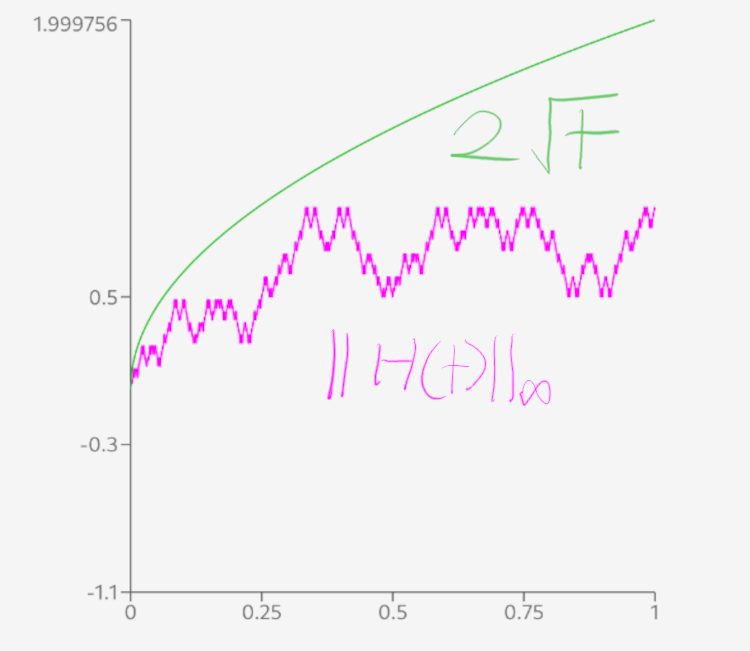

Formalizing Hilbert Curves in Lean
The famous Hilbert curve has a simple inductive construction, but key portions use analysis. Lean should be an ideal proof assistant for applying the key mathematical principles. In my last post, I walked through informal definitions and proofs. The following concerns a more sophisticated perspective on how Lean can undertake this sort of mathematics.
I'll present some of my formalization below using Verso, Lean's new HTML generation tool, but I'll also tell you about the other interesting facts you learn by thinking hard about every detail while coding a formalization, such as Hölder continuity, computability, partial invertibility, etc. Despite disappointing AI provers, promising inline visualizations with ProofWidgets, and our lovely library of math mathlib, the challenging gaps left by spatial intuition leave a lot of gnarly induction, casework, and algebra, along with some confusing remnants from mathlib and Lean's casting rules.
Mathematical Notation for the Hilbert Curve
We will construct integer versions of the Hilbert curve denoted as H_n(i) where n and i are natural numbers, and H_n(i) is a pair of natural numbers.
When we interpolate and scale down the integer versions, we'll use \tilde{H}_i(t).
Finally when we pass to the limit and get the final curve, as H(t) with no superscript or subscript.
Lean Design Decisions and Selected Proofs
If you don't care about the details of Lean proofs, then I would skip this section, so go to Additional Directions. If you are mildly interested, please skim all the proofs!
In our proofs in the previous post, I did mention the explicit definitions of each version, however most of the proofs deferred the case-work and algebra to the reader. Often, the truth of the statement is completely clear from the pictures involved, such as the bounds and injectivity of the integer case H_i(n). Of course, this is insufficient for a truly formal proof as in Lean 4. The primary tool for the low-level definitions is essentially always induction, but we still need to label the different cases.
Filling out the details here will involve explaining to Lean what a "quadrant" is, how the various intervals map to those quadrants, and explaining in detail what each transformation does, and defining their properties. In particular, the later proofs require continuity assumptions.
Additionally, there are some activities that seem to be mildly inadequately covered in Lean's mathlib: casting from \mathbb{N} \times \mathbb{N} to \mathbb{Z} \times \mathbb{Z} and to \mathbb{R} \times \mathbb{R}, linear interpolation, and a few proofs about floors.
Transformations and Quadrants
I define a custom name for the lengths, since it appeared as a very common repeated expression. In retrospect, I probably would I have used 4^n and made the term reducible to 4^n automatically, but you live and learn. I would not be surprised if
my other choices here were somewhat suboptimal, especially the quadrants.
def hilbert_length (i : ℕ) := 2^(2*i)
For each of the integer transformations, we'll need some code.
def T0_nat : ℕ × ℕ → ℕ × ℕ := Prod.swap
def T1_nat (i : ℕ) (mn : ℕ × ℕ) : ℕ × ℕ := mn + (0, 2^i)
def T2_nat (i : ℕ) (mn : ℕ × ℕ) : ℕ × ℕ := mn + (2^i, 2^i)
def T3_nat (i : ℕ) (mn : ℕ × ℕ) : ℕ × ℕ := (2^(i+1) - 1, 2^i - 1) - mn.swap
Since the natural numbers are truly awful once you have subtraction, we have a ring version that applies any ring, so we get \mathbb{Z} and \mathbb{R}. Since we have this more general statements, we drop the _nat.
variable {R : Type*} [Ring R]
def T3 (i : ℕ) : R × R →ᵃ[R] R × R := {
toFun := fun mn => (2^(i+1) - 1, 2^i - 1) - mn.swap
linear := -HilbertCurve.T0
map_vadd' p v := R:Type u_1inst✝:Ring Ri:ℕp:R × Rv:R × R⊢ (2 ^ (i + 1) - 1, 2 ^ i - 1) - (v +ᵥ p).swap = (-HilbertCurve.T0) v +ᵥ (2 ^ (i + 1) - 1, 2 ^ i - 1) - p.swap
R:Type u_1inst✝:Ring Ri:ℕp:R × Rv:R × R⊢ (2 ^ (i + 1) - 1, 2 ^ i - 1) - (v.swap + p.swap) = -v.swap + ((2 ^ (i + 1) - 1, 2 ^ i - 1) - p.swap)
R:Type u_1inst✝:Ring Ri:ℕp:R × Rv:R × Ra:R × R := (2 ^ (i + 1) - 1, 2 ^ i - 1)⊢ a - (v.swap + p.swap) = -v.swap + (a - p.swap)
-- For some reason, ring doesn't work
R:Type u_1inst✝:Ring Ri:ℕp:R × Rv:R × Ra:R × R := (2 ^ (i + 1) - 1, 2 ^ i - 1)⊢ a - (p.swap + v.swap) = a - p.swap + -v.swap
All goals completed! 🐙
}
For each of these, we'll need quite a few lemmas for casting them which depend on bounds.
lemma T3_cast_nat (i : ℕ) (mn : ℕ × ℕ) (h1 : mn.1 ≤ 2^i - 1) (h2 : mn.2 ≤ 2^(i+1) - 1) :
T3 i (mn : R × R) = T3_nat i mn := R:Type u_1inst✝:Ring Ri:ℕmn:ℕ × ℕh1:mn.1 ≤ 2 ^ i - 1h2:mn.2 ≤ 2 ^ (i + 1) - 1⊢ (T3 i) ↑mn = ↑(T3_nat i mn)
R:Type u_1inst✝:Ring Ri:ℕmn:ℕ × ℕh1:mn.1 ≤ 2 ^ i - 1h2:mn.2 ≤ 2 ^ (i + 1) - 1⊢ { toFun := fun mn => (2 ^ (i + 1) - 1 - mn.2, 2 ^ i - 1 - mn.1), linear := -HilbertCurve.T0, map_vadd' := ⋯ }
(↑mn.1, ↑mn.2) =
(↑(2 ^ (i + 1) - 1 - mn.2), ↑(2 ^ i - 1 - mn.1))
R:Type u_1inst✝:Ring Ri:ℕmn:ℕ × ℕh1:mn.1 ≤ 2 ^ i - 1h2:mn.2 ≤ 2 ^ (i + 1) - 1⊢ { toFun := fun mn => (2 ^ (i + 1) - 1 - mn.2, 2 ^ i - 1 - mn.1), linear := -HilbertCurve.T0, map_vadd' := ⋯ }
(↑mn.1, ↑mn.2) =
(↑(2 ^ (i + 1) - 1) - ↑mn.2, ↑(2 ^ i - 1) - ↑mn.1)
All goals completed! 🐙
We will need to deal with a lot of different lemmas and casework about quadrants, so we'll create code for the transformations themselves.
inductive Quadrant where
| BOTTOM_LEFT | TOP_LEFT | TOP_RIGHT | BOTTOM_RIGHT
deriving DecidableEq
We'll need functions to then understand how we divide our input \mathbb{N} into quadrants as well as \mathbb{N} \times \mathbb{N} (which will be get_quadrant'). You might note that i here will be the divisions of H_{i+1}, and this is designed to work better with the pattern matching.
def get_quadrant (i n : ℕ) : Quadrant :=
if n < hilbert_length i then
Quadrant.BOTTOM_LEFT
else if n < 2 * hilbert_length i then
Quadrant.TOP_LEFT
else if n < 3 * hilbert_length i then
Quadrant.TOP_RIGHT
else
Quadrant.BOTTOM_RIGHT
Each of these quadrants will also have a few "equal" lemmas like bottom_left_eq : get_quadrant i n = Quadrant.BOTTOM_LEFT ↔ n < hilbert_length i. These statements seem required in my definition, which actually makes me think my definition is pretty bad.
The Integer Version
Finally, we can explain the definition of our first Hilbert curve:
def hilbert_curve : ℕ → ℕ → (ℕ × ℕ)
| 0 => fun _ => (0, 0)
| .succ i => fun n => match get_quadrant i n with
| Quadrant.BOTTOM_LEFT =>
let h := hilbert_curve i n
T0_nat h
| Quadrant.TOP_LEFT => let h := hilbert_curve i (n - hilbert_length i)
T1_nat i h
| Quadrant.TOP_RIGHT => let h := hilbert_curve i (n - 2*hilbert_length i)
T2_nat i h
| Quadrant.BOTTOM_RIGHT =>
let h := hilbert_curve i (n - 3*hilbert_length i)
T3_nat i h
Although this version has all the abbreviations such as Quadrant.BOTTOM_LEFT and get_quadrant. Those can be included inline without much loss in clarity, but the Lean proofs become much more difficult once casework gets involved.
Unlike the normal presentation of the Hilbert curve, we have a definition for the n = 0 case, H_0(i) = (0, 0). For i \ge 1, we can then divide everything up into quadrants, then apply each transformation, and recurse.
Before it is time to prove theorems, it is important to test definitions like this. My first few definitions had some sign and off-by-one errors which can be found with testing:
/--
info: [(0, 0), (0, 1), (1, 1), (1, 0)]
-/
#guard_msgs in
#eval List.map (hilbert_curve 1) (List.range (2^2))
Using ProofWidgets, we can also display these, which makes the nature of a bug extremely clear. By giving the examples folder of ProofWidgets to any modern LLM (I used Gemini), you can generate SVGs from Lean data. Then #html sends the SVGs to the Lean InfoView on the right:
-- HilbertCurve.Pictures (omitting the verbose SVG AI-generated code) def hilbert_curve_svg (i : ℕ) (stroke : Svg.Size frame := .px 1) : Svg frame := sorry -- https://github.com/josephmckinsey/LeanHilbertCurves/blob/325dc26792e216989d0a713696a698db04e9d7b6/HilbertCurve/Pictures.lean#L57 #html (hilbert_curve_svg 2).toHtml
These pictures can be quite helpful, since they can let you verify hypotheses experimentally before committing to a precise, yet wrong statement. Ever since @thingskatedid inspired me, I've been enjoying the fruits of visualizations created with throwaway Javascript.
Since I know how annoying extra conditions can get, all of my functions use "normal" types like ℕ instead of Fin n. I didn't test this design decision, so maybe adding dependent information isn't so bad. Beyond the typical input bounds, our definition naturally makes the curve constant.
Some formal proofs about integers
To actually prove injectivity and surjectivity, I decided to implement the inverse, which made preliminary testing easy. Formally verifying it amounted to a lot of casework and induction. For the casework, we have to prove that each of the transformations actually preserve the quadrants. Each one is basic algebra (modulo annoying casting).
open HilbertCurve
#check get_quadrant'_T0
example (i : ℕ) (mn : ℕ × ℕ) (h : mn ≤ (2^i - 1, 2^i - 1)) :
get_quadrant' i (T0_nat mn) = Quadrant.BOTTOM_LEFT := i:ℕmn:ℕ × ℕh:mn ≤ (2 ^ i - 1, 2 ^ i - 1)⊢ get_quadrant' i (T0_nat mn) = Quadrant.BOTTOM_LEFT
i:ℕmn:ℕ × ℕh:mn ≤ (2 ^ i - 1, 2 ^ i - 1)⊢ (if mn.swap.1 < 2 ^ i then if mn.swap.2 < 2 ^ i then Quadrant.BOTTOM_LEFT else Quadrant.TOP_LEFT
else if mn.swap.2 < 2 ^ i then Quadrant.BOTTOM_RIGHT else Quadrant.TOP_RIGHT) =
Quadrant.BOTTOM_LEFT
have : 2^i - 1 < 2^i := i:ℕmn:ℕ × ℕh:mn ≤ (2 ^ i - 1, 2 ^ i - 1)⊢ get_quadrant' i (T0_nat mn) = Quadrant.BOTTOM_LEFT All goals completed! 🐙
i:ℕmn:ℕ × ℕh:mn ≤ (2 ^ i - 1, 2 ^ i - 1)this:2 ^ i - 1 < 2 ^ i⊢ mn.swap.2 < 2 ^ ii:ℕmn:ℕ × ℕh:mn ≤ (2 ^ i - 1, 2 ^ i - 1)this:2 ^ i - 1 < 2 ^ i⊢ mn.swap.1 < 2 ^ i
i:ℕmn:ℕ × ℕh:mn ≤ (2 ^ i - 1, 2 ^ i - 1)this:2 ^ i - 1 < 2 ^ i⊢ mn.swap.2 < 2 ^ i All goals completed! 🐙
All goals completed! 🐙
which then let us decompose the hilbert_curve
#check quadrant_preserved
example (i n : ℕ) : get_quadrant' i (hilbert_curve (i+1) n) = get_quadrant i n := i:ℕn:ℕ⊢ get_quadrant' i (hilbert_curve (i + 1) n) = get_quadrant i n All goals completed! 🐙
and finally we can finish with a bunch of induction. As a reminder, you can hover or click elements to get details!
#check hilbert_curve_injective
/--
A hilbert curve is injective on its length
-/
example (i : ℕ) (n : ℕ) (h : n < hilbert_length i) :
hilbert_inverse i (hilbert_curve i n) = n := i:ℕn:ℕh:n < hilbert_length i⊢ hilbert_inverse i (hilbert_curve i n) = n
induction i generalizing n with
| zero =>
n:ℕh:n = 0⊢ hilbert_inverse 0 (hilbert_curve 0 n) = n
n:ℕh:n = 0⊢ hilbert_inverse 0 (hilbert_curve 0 0) = 0
All goals completed! 🐙
| succ i ih =>
i:ℕih:∀ n < hilbert_length i, hilbert_inverse i (hilbert_curve i n) = nn:ℕh:n < hilbert_length (i + 1)this:get_quadrant' i (hilbert_curve (i + 1) n) = get_quadrant i n⊢ hilbert_inverse (i + 1) (hilbert_curve (i + 1) n) = n
i:ℕih:∀ n < hilbert_length i, hilbert_inverse i (hilbert_curve i n) = nn:ℕh:n < hilbert_length (i + 1)q:Quadrant := get_quadrant i nthis:get_quadrant' i (hilbert_curve (i + 1) n) = qq_def:q = get_quadrant i n⊢ hilbert_inverse (i + 1) (hilbert_curve (i + 1) n) = n
i:ℕih:∀ n < hilbert_length i, hilbert_inverse i (hilbert_curve i n) = nn:ℕh:n < hilbert_length (i + 1)q:Quadrant := get_quadrant i nthis:get_quadrant' i (hilbert_curve (i + 1) n) = qq_def:q = get_quadrant i n⊢ (match get_quadrant' i (hilbert_curve (i + 1) n) with
| Quadrant.BOTTOM_LEFT => hilbert_inverse i (T0_nat (hilbert_curve (i + 1) n))
| Quadrant.TOP_LEFT => hilbert_length i + hilbert_inverse i (T1_inv_nat i (hilbert_curve (i + 1) n))
| Quadrant.BOTTOM_RIGHT => 3 * hilbert_length i + hilbert_inverse i (T3_inv_nat i (hilbert_curve (i + 1) n))
| Quadrant.TOP_RIGHT => 2 * hilbert_length i + hilbert_inverse i (T2_inv_nat i (hilbert_curve (i + 1) n))) =
n
i:ℕih:∀ n < hilbert_length i, hilbert_inverse i (hilbert_curve i n) = nn:ℕh:n < hilbert_length (i + 1)q:Quadrant := get_quadrant i nthis:get_quadrant' i (hilbert_curve (i + 1) n) = qq_def:q = get_quadrant i n⊢ (match q with
| Quadrant.BOTTOM_LEFT => hilbert_inverse i (T0_nat (hilbert_curve (i + 1) n))
| Quadrant.TOP_LEFT => hilbert_length i + hilbert_inverse i (T1_inv_nat i (hilbert_curve (i + 1) n))
| Quadrant.BOTTOM_RIGHT => 3 * hilbert_length i + hilbert_inverse i (T3_inv_nat i (hilbert_curve (i + 1) n))
| Quadrant.TOP_RIGHT => 2 * hilbert_length i + hilbert_inverse i (T2_inv_nat i (hilbert_curve (i + 1) n))) =
n
i:ℕih:∀ n < hilbert_length i, hilbert_inverse i (hilbert_curve i n) = nn:ℕh:n < hilbert_length (i + 1)this:get_quadrant' i (hilbert_curve (i + 1) n) = Quadrant.BOTTOM_LEFTq_def:Quadrant.BOTTOM_LEFT = get_quadrant i n⊢ (match Quadrant.BOTTOM_LEFT with
| Quadrant.BOTTOM_LEFT => hilbert_inverse i (T0_nat (hilbert_curve (i + 1) n))
| Quadrant.TOP_LEFT => hilbert_length i + hilbert_inverse i (T1_inv_nat i (hilbert_curve (i + 1) n))
| Quadrant.BOTTOM_RIGHT => 3 * hilbert_length i + hilbert_inverse i (T3_inv_nat i (hilbert_curve (i + 1) n))
| Quadrant.TOP_RIGHT => 2 * hilbert_length i + hilbert_inverse i (T2_inv_nat i (hilbert_curve (i + 1) n))) =
ni:ℕih:∀ n < hilbert_length i, hilbert_inverse i (hilbert_curve i n) = nn:ℕh:n < hilbert_length (i + 1)this:get_quadrant' i (hilbert_curve (i + 1) n) = Quadrant.TOP_LEFTq_def:Quadrant.TOP_LEFT = get_quadrant i n⊢ (match Quadrant.TOP_LEFT with
| Quadrant.BOTTOM_LEFT => hilbert_inverse i (T0_nat (hilbert_curve (i + 1) n))
| Quadrant.TOP_LEFT => hilbert_length i + hilbert_inverse i (T1_inv_nat i (hilbert_curve (i + 1) n))
| Quadrant.BOTTOM_RIGHT => 3 * hilbert_length i + hilbert_inverse i (T3_inv_nat i (hilbert_curve (i + 1) n))
| Quadrant.TOP_RIGHT => 2 * hilbert_length i + hilbert_inverse i (T2_inv_nat i (hilbert_curve (i + 1) n))) =
ni:ℕih:∀ n < hilbert_length i, hilbert_inverse i (hilbert_curve i n) = nn:ℕh:n < hilbert_length (i + 1)this:get_quadrant' i (hilbert_curve (i + 1) n) = Quadrant.TOP_RIGHTq_def:Quadrant.TOP_RIGHT = get_quadrant i n⊢ (match Quadrant.TOP_RIGHT with
| Quadrant.BOTTOM_LEFT => hilbert_inverse i (T0_nat (hilbert_curve (i + 1) n))
| Quadrant.TOP_LEFT => hilbert_length i + hilbert_inverse i (T1_inv_nat i (hilbert_curve (i + 1) n))
| Quadrant.BOTTOM_RIGHT => 3 * hilbert_length i + hilbert_inverse i (T3_inv_nat i (hilbert_curve (i + 1) n))
| Quadrant.TOP_RIGHT => 2 * hilbert_length i + hilbert_inverse i (T2_inv_nat i (hilbert_curve (i + 1) n))) =
ni:ℕih:∀ n < hilbert_length i, hilbert_inverse i (hilbert_curve i n) = nn:ℕh:n < hilbert_length (i + 1)this:get_quadrant' i (hilbert_curve (i + 1) n) = Quadrant.BOTTOM_RIGHTq_def:Quadrant.BOTTOM_RIGHT = get_quadrant i n⊢ (match Quadrant.BOTTOM_RIGHT with
| Quadrant.BOTTOM_LEFT => hilbert_inverse i (T0_nat (hilbert_curve (i + 1) n))
| Quadrant.TOP_LEFT => hilbert_length i + hilbert_inverse i (T1_inv_nat i (hilbert_curve (i + 1) n))
| Quadrant.BOTTOM_RIGHT => 3 * hilbert_length i + hilbert_inverse i (T3_inv_nat i (hilbert_curve (i + 1) n))
| Quadrant.TOP_RIGHT => 2 * hilbert_length i + hilbert_inverse i (T2_inv_nat i (hilbert_curve (i + 1) n))) =
n i:ℕih:∀ n < hilbert_length i, hilbert_inverse i (hilbert_curve i n) = nn:ℕh:n < hilbert_length (i + 1)this:get_quadrant' i (hilbert_curve (i + 1) n) = Quadrant.BOTTOM_LEFTq_def:Quadrant.BOTTOM_LEFT = get_quadrant i n⊢ (match Quadrant.BOTTOM_LEFT with
| Quadrant.BOTTOM_LEFT => hilbert_inverse i (T0_nat (hilbert_curve (i + 1) n))
| Quadrant.TOP_LEFT => hilbert_length i + hilbert_inverse i (T1_inv_nat i (hilbert_curve (i + 1) n))
| Quadrant.BOTTOM_RIGHT => 3 * hilbert_length i + hilbert_inverse i (T3_inv_nat i (hilbert_curve (i + 1) n))
| Quadrant.TOP_RIGHT => 2 * hilbert_length i + hilbert_inverse i (T2_inv_nat i (hilbert_curve (i + 1) n))) =
ni:ℕih:∀ n < hilbert_length i, hilbert_inverse i (hilbert_curve i n) = nn:ℕh:n < hilbert_length (i + 1)this:get_quadrant' i (hilbert_curve (i + 1) n) = Quadrant.TOP_LEFTq_def:Quadrant.TOP_LEFT = get_quadrant i n⊢ (match Quadrant.TOP_LEFT with
| Quadrant.BOTTOM_LEFT => hilbert_inverse i (T0_nat (hilbert_curve (i + 1) n))
| Quadrant.TOP_LEFT => hilbert_length i + hilbert_inverse i (T1_inv_nat i (hilbert_curve (i + 1) n))
| Quadrant.BOTTOM_RIGHT => 3 * hilbert_length i + hilbert_inverse i (T3_inv_nat i (hilbert_curve (i + 1) n))
| Quadrant.TOP_RIGHT => 2 * hilbert_length i + hilbert_inverse i (T2_inv_nat i (hilbert_curve (i + 1) n))) =
ni:ℕih:∀ n < hilbert_length i, hilbert_inverse i (hilbert_curve i n) = nn:ℕh:n < hilbert_length (i + 1)this:get_quadrant' i (hilbert_curve (i + 1) n) = Quadrant.TOP_RIGHTq_def:Quadrant.TOP_RIGHT = get_quadrant i n⊢ (match Quadrant.TOP_RIGHT with
| Quadrant.BOTTOM_LEFT => hilbert_inverse i (T0_nat (hilbert_curve (i + 1) n))
| Quadrant.TOP_LEFT => hilbert_length i + hilbert_inverse i (T1_inv_nat i (hilbert_curve (i + 1) n))
| Quadrant.BOTTOM_RIGHT => 3 * hilbert_length i + hilbert_inverse i (T3_inv_nat i (hilbert_curve (i + 1) n))
| Quadrant.TOP_RIGHT => 2 * hilbert_length i + hilbert_inverse i (T2_inv_nat i (hilbert_curve (i + 1) n))) =
ni:ℕih:∀ n < hilbert_length i, hilbert_inverse i (hilbert_curve i n) = nn:ℕh:n < hilbert_length (i + 1)this:get_quadrant' i (hilbert_curve (i + 1) n) = Quadrant.BOTTOM_RIGHTq_def:Quadrant.BOTTOM_RIGHT = get_quadrant i n⊢ (match Quadrant.BOTTOM_RIGHT with
| Quadrant.BOTTOM_LEFT => hilbert_inverse i (T0_nat (hilbert_curve (i + 1) n))
| Quadrant.TOP_LEFT => hilbert_length i + hilbert_inverse i (T1_inv_nat i (hilbert_curve (i + 1) n))
| Quadrant.BOTTOM_RIGHT => 3 * hilbert_length i + hilbert_inverse i (T3_inv_nat i (hilbert_curve (i + 1) n))
| Quadrant.TOP_RIGHT => 2 * hilbert_length i + hilbert_inverse i (T2_inv_nat i (hilbert_curve (i + 1) n))) =
n i:ℕih:∀ n < hilbert_length i, hilbert_inverse i (hilbert_curve i n) = nn:ℕh:n < hilbert_length (i + 1)this:get_quadrant' i (hilbert_curve (i + 1) n) = Quadrant.BOTTOM_RIGHTq_def:Quadrant.BOTTOM_RIGHT = get_quadrant i n⊢ 3 * hilbert_length i + hilbert_inverse i (T3_inv_nat i (hilbert_curve (i + 1) n)) = n i:ℕih:∀ n < hilbert_length i, hilbert_inverse i (hilbert_curve i n) = nn:ℕh:n < hilbert_length (i + 1)this:get_quadrant' i (hilbert_curve (i + 1) n) = Quadrant.BOTTOM_LEFTq_def:Quadrant.BOTTOM_LEFT = get_quadrant i n⊢ hilbert_inverse i (T0_nat (hilbert_curve (i + 1) n)) = ni:ℕih:∀ n < hilbert_length i, hilbert_inverse i (hilbert_curve i n) = nn:ℕh:n < hilbert_length (i + 1)this:get_quadrant' i (hilbert_curve (i + 1) n) = Quadrant.TOP_LEFTq_def:Quadrant.TOP_LEFT = get_quadrant i n⊢ hilbert_length i + hilbert_inverse i (T1_inv_nat i (hilbert_curve (i + 1) n)) = ni:ℕih:∀ n < hilbert_length i, hilbert_inverse i (hilbert_curve i n) = nn:ℕh:n < hilbert_length (i + 1)this:get_quadrant' i (hilbert_curve (i + 1) n) = Quadrant.TOP_RIGHTq_def:Quadrant.TOP_RIGHT = get_quadrant i n⊢ 2 * hilbert_length i + hilbert_inverse i (T2_inv_nat i (hilbert_curve (i + 1) n)) = ni:ℕih:∀ n < hilbert_length i, hilbert_inverse i (hilbert_curve i n) = nn:ℕh:n < hilbert_length (i + 1)this:get_quadrant' i (hilbert_curve (i + 1) n) = Quadrant.BOTTOM_RIGHTq_def:Quadrant.BOTTOM_RIGHT = get_quadrant i n⊢ 3 * hilbert_length i + hilbert_inverse i (T3_inv_nat i (hilbert_curve (i + 1) n)) = n i:ℕih:∀ n < hilbert_length i, hilbert_inverse i (hilbert_curve i n) = nn:ℕh:n < hilbert_length (i + 1)this:get_quadrant' i (hilbert_curve (i + 1) n) = Quadrant.BOTTOM_RIGHTq_def:Quadrant.BOTTOM_RIGHT = get_quadrant i n⊢ 3 * hilbert_length i +
hilbert_inverse i
(T3_inv_nat i
(match get_quadrant i n with
| Quadrant.BOTTOM_LEFT =>
let h := hilbert_curve i n;
T0_nat h
| Quadrant.TOP_LEFT =>
let h := hilbert_curve i (n - hilbert_length i);
T1_nat i h
| Quadrant.TOP_RIGHT =>
let h := hilbert_curve i (n - 2 * hilbert_length i);
T2_nat i h
| Quadrant.BOTTOM_RIGHT =>
let h := hilbert_curve i (n - 3 * hilbert_length i);
T3_nat i h)) =
n i:ℕih:∀ n < hilbert_length i, hilbert_inverse i (hilbert_curve i n) = nn:ℕh:n < hilbert_length (i + 1)this:get_quadrant' i (hilbert_curve (i + 1) n) = Quadrant.BOTTOM_LEFTq_def:Quadrant.BOTTOM_LEFT = get_quadrant i n⊢ hilbert_inverse i
(T0_nat
(match get_quadrant i n with
| Quadrant.BOTTOM_LEFT =>
let h := hilbert_curve i n;
T0_nat h
| Quadrant.TOP_LEFT =>
let h := hilbert_curve i (n - hilbert_length i);
T1_nat i h
| Quadrant.TOP_RIGHT =>
let h := hilbert_curve i (n - 2 * hilbert_length i);
T2_nat i h
| Quadrant.BOTTOM_RIGHT =>
let h := hilbert_curve i (n - 3 * hilbert_length i);
T3_nat i h)) =
ni:ℕih:∀ n < hilbert_length i, hilbert_inverse i (hilbert_curve i n) = nn:ℕh:n < hilbert_length (i + 1)this:get_quadrant' i (hilbert_curve (i + 1) n) = Quadrant.TOP_LEFTq_def:Quadrant.TOP_LEFT = get_quadrant i n⊢ hilbert_length i +
hilbert_inverse i
(T1_inv_nat i
(match get_quadrant i n with
| Quadrant.BOTTOM_LEFT =>
let h := hilbert_curve i n;
T0_nat h
| Quadrant.TOP_LEFT =>
let h := hilbert_curve i (n - hilbert_length i);
T1_nat i h
| Quadrant.TOP_RIGHT =>
let h := hilbert_curve i (n - 2 * hilbert_length i);
T2_nat i h
| Quadrant.BOTTOM_RIGHT =>
let h := hilbert_curve i (n - 3 * hilbert_length i);
T3_nat i h)) =
ni:ℕih:∀ n < hilbert_length i, hilbert_inverse i (hilbert_curve i n) = nn:ℕh:n < hilbert_length (i + 1)this:get_quadrant' i (hilbert_curve (i + 1) n) = Quadrant.TOP_RIGHTq_def:Quadrant.TOP_RIGHT = get_quadrant i n⊢ 2 * hilbert_length i +
hilbert_inverse i
(T2_inv_nat i
(match get_quadrant i n with
| Quadrant.BOTTOM_LEFT =>
let h := hilbert_curve i n;
T0_nat h
| Quadrant.TOP_LEFT =>
let h := hilbert_curve i (n - hilbert_length i);
T1_nat i h
| Quadrant.TOP_RIGHT =>
let h := hilbert_curve i (n - 2 * hilbert_length i);
T2_nat i h
| Quadrant.BOTTOM_RIGHT =>
let h := hilbert_curve i (n - 3 * hilbert_length i);
T3_nat i h)) =
ni:ℕih:∀ n < hilbert_length i, hilbert_inverse i (hilbert_curve i n) = nn:ℕh:n < hilbert_length (i + 1)this:get_quadrant' i (hilbert_curve (i + 1) n) = Quadrant.BOTTOM_RIGHTq_def:Quadrant.BOTTOM_RIGHT = get_quadrant i n⊢ 3 * hilbert_length i +
hilbert_inverse i
(T3_inv_nat i
(match get_quadrant i n with
| Quadrant.BOTTOM_LEFT =>
let h := hilbert_curve i n;
T0_nat h
| Quadrant.TOP_LEFT =>
let h := hilbert_curve i (n - hilbert_length i);
T1_nat i h
| Quadrant.TOP_RIGHT =>
let h := hilbert_curve i (n - 2 * hilbert_length i);
T2_nat i h
| Quadrant.BOTTOM_RIGHT =>
let h := hilbert_curve i (n - 3 * hilbert_length i);
T3_nat i h)) =
n i:ℕih:∀ n < hilbert_length i, hilbert_inverse i (hilbert_curve i n) = nn:ℕh:n < hilbert_length (i + 1)this:get_quadrant' i (hilbert_curve (i + 1) n) = Quadrant.BOTTOM_RIGHTq_def:Quadrant.BOTTOM_RIGHT = get_quadrant i n⊢ 3 * hilbert_length i +
hilbert_inverse i
(T3_inv_nat i
(match Quadrant.BOTTOM_RIGHT with
| Quadrant.BOTTOM_LEFT =>
let h := hilbert_curve i n;
T0_nat h
| Quadrant.TOP_LEFT =>
let h := hilbert_curve i (n - hilbert_length i);
T1_nat i h
| Quadrant.TOP_RIGHT =>
let h := hilbert_curve i (n - 2 * hilbert_length i);
T2_nat i h
| Quadrant.BOTTOM_RIGHT =>
let h := hilbert_curve i (n - 3 * hilbert_length i);
T3_nat i h)) =
n
i:ℕih:∀ n < hilbert_length i, hilbert_inverse i (hilbert_curve i n) = nn:ℕh:n < hilbert_length (i + 1)this:get_quadrant' i (hilbert_curve (i + 1) n) = Quadrant.BOTTOM_LEFTq_def:Quadrant.BOTTOM_LEFT = get_quadrant i n⊢ hilbert_inverse i
(T0_nat
(match Quadrant.BOTTOM_LEFT with
| Quadrant.BOTTOM_LEFT =>
let h := hilbert_curve i n;
T0_nat h
| Quadrant.TOP_LEFT =>
let h := hilbert_curve i (n - hilbert_length i);
T1_nat i h
| Quadrant.TOP_RIGHT =>
let h := hilbert_curve i (n - 2 * hilbert_length i);
T2_nat i h
| Quadrant.BOTTOM_RIGHT =>
let h := hilbert_curve i (n - 3 * hilbert_length i);
T3_nat i h)) =
n i:ℕih:∀ n < hilbert_length i, hilbert_inverse i (hilbert_curve i n) = nn:ℕh:n < hilbert_length (i + 1)this:get_quadrant' i (hilbert_curve (i + 1) n) = Quadrant.BOTTOM_LEFTq_def:Quadrant.BOTTOM_LEFT = get_quadrant i n⊢ hilbert_inverse i (T0_nat (T0_nat (hilbert_curve i n))) = n
i:ℕih:∀ n < hilbert_length i, hilbert_inverse i (hilbert_curve i n) = nn:ℕh:n < hilbert_length (i + 1)this:get_quadrant' i (hilbert_curve (i + 1) n) = Quadrant.BOTTOM_LEFTq_def:Quadrant.BOTTOM_LEFT = get_quadrant i n⊢ n < hilbert_length i
All goals completed! 🐙
i:ℕih:∀ n < hilbert_length i, hilbert_inverse i (hilbert_curve i n) = nn:ℕh:n < hilbert_length (i + 1)this:get_quadrant' i (hilbert_curve (i + 1) n) = Quadrant.TOP_LEFTq_def:Quadrant.TOP_LEFT = get_quadrant i n⊢ hilbert_length i +
hilbert_inverse i
(T1_inv_nat i
(match Quadrant.TOP_LEFT with
| Quadrant.BOTTOM_LEFT =>
let h := hilbert_curve i n;
T0_nat h
| Quadrant.TOP_LEFT =>
let h := hilbert_curve i (n - hilbert_length i);
T1_nat i h
| Quadrant.TOP_RIGHT =>
let h := hilbert_curve i (n - 2 * hilbert_length i);
T2_nat i h
| Quadrant.BOTTOM_RIGHT =>
let h := hilbert_curve i (n - 3 * hilbert_length i);
T3_nat i h)) =
n i:ℕih:∀ n < hilbert_length i, hilbert_inverse i (hilbert_curve i n) = nn:ℕh:n < hilbert_length (i + 1)this:get_quadrant' i (hilbert_curve (i + 1) n) = Quadrant.TOP_LEFTq_def:Quadrant.TOP_LEFT = get_quadrant i n⊢ hilbert_length i + hilbert_inverse i (T1_inv_nat i (T1_nat i (hilbert_curve i (n - hilbert_length i)))) = n
i:ℕih:∀ n < hilbert_length i, hilbert_inverse i (hilbert_curve i n) = nn:ℕh:n < hilbert_length (i + 1)this:get_quadrant' i (hilbert_curve (i + 1) n) = Quadrant.TOP_LEFTq_def:Quadrant.TOP_LEFT = get_quadrant i n⊢ hilbert_length i + hilbert_inverse i (hilbert_curve i (n - hilbert_length i)) = n
i:ℕih:∀ n < hilbert_length i, hilbert_inverse i (hilbert_curve i n) = nn:ℕh:n < hilbert_length (i + 1)this✝:get_quadrant' i (hilbert_curve (i + 1) n) = Quadrant.TOP_LEFTq_def:Quadrant.TOP_LEFT = get_quadrant i nthis:hilbert_length i ≤ n ∧ n < 2 * hilbert_length i⊢ hilbert_length i + hilbert_inverse i (hilbert_curve i (n - hilbert_length i)) = n
i:ℕih:∀ n < hilbert_length i, hilbert_inverse i (hilbert_curve i n) = nn:ℕh:n < hilbert_length (i + 1)this✝:get_quadrant' i (hilbert_curve (i + 1) n) = Quadrant.TOP_LEFTq_def:Quadrant.TOP_LEFT = get_quadrant i nthis:hilbert_length i ≤ n ∧ n < 2 * hilbert_length i⊢ hilbert_length i + (n - hilbert_length i) = ni:ℕih:∀ n < hilbert_length i, hilbert_inverse i (hilbert_curve i n) = nn:ℕh:n < hilbert_length (i + 1)this✝:get_quadrant' i (hilbert_curve (i + 1) n) = Quadrant.TOP_LEFTq_def:Quadrant.TOP_LEFT = get_quadrant i nthis:hilbert_length i ≤ n ∧ n < 2 * hilbert_length i⊢ n - hilbert_length i < hilbert_length i
i:ℕih:∀ n < hilbert_length i, hilbert_inverse i (hilbert_curve i n) = nn:ℕh:n < hilbert_length (i + 1)this✝:get_quadrant' i (hilbert_curve (i + 1) n) = Quadrant.TOP_LEFTq_def:Quadrant.TOP_LEFT = get_quadrant i nthis:hilbert_length i ≤ n ∧ n < 2 * hilbert_length i⊢ hilbert_length i + (n - hilbert_length i) = n All goals completed! 🐙
All goals completed! 🐙
i:ℕih:∀ n < hilbert_length i, hilbert_inverse i (hilbert_curve i n) = nn:ℕh:n < hilbert_length (i + 1)this:get_quadrant' i (hilbert_curve (i + 1) n) = Quadrant.TOP_RIGHTq_def:Quadrant.TOP_RIGHT = get_quadrant i n⊢ 2 * hilbert_length i +
hilbert_inverse i
(T2_inv_nat i
(match Quadrant.TOP_RIGHT with
| Quadrant.BOTTOM_LEFT =>
let h := hilbert_curve i n;
T0_nat h
| Quadrant.TOP_LEFT =>
let h := hilbert_curve i (n - hilbert_length i);
T1_nat i h
| Quadrant.TOP_RIGHT =>
let h := hilbert_curve i (n - 2 * hilbert_length i);
T2_nat i h
| Quadrant.BOTTOM_RIGHT =>
let h := hilbert_curve i (n - 3 * hilbert_length i);
T3_nat i h)) =
n i:ℕih:∀ n < hilbert_length i, hilbert_inverse i (hilbert_curve i n) = nn:ℕh:n < hilbert_length (i + 1)this:get_quadrant' i (hilbert_curve (i + 1) n) = Quadrant.TOP_RIGHTq_def:Quadrant.TOP_RIGHT = get_quadrant i n⊢ 2 * hilbert_length i + hilbert_inverse i (T2_inv_nat i (T2_nat i (hilbert_curve i (n - 2 * hilbert_length i)))) = n
i:ℕih:∀ n < hilbert_length i, hilbert_inverse i (hilbert_curve i n) = nn:ℕh:n < hilbert_length (i + 1)this:get_quadrant' i (hilbert_curve (i + 1) n) = Quadrant.TOP_RIGHTq_def:Quadrant.TOP_RIGHT = get_quadrant i n⊢ 2 * hilbert_length i + hilbert_inverse i (hilbert_curve i (n - 2 * hilbert_length i)) = n
i:ℕih:∀ n < hilbert_length i, hilbert_inverse i (hilbert_curve i n) = nn:ℕh:n < hilbert_length (i + 1)this✝:get_quadrant' i (hilbert_curve (i + 1) n) = Quadrant.TOP_RIGHTq_def:Quadrant.TOP_RIGHT = get_quadrant i nthis:2 * hilbert_length i ≤ n ∧ n < 3 * hilbert_length i⊢ 2 * hilbert_length i + hilbert_inverse i (hilbert_curve i (n - 2 * hilbert_length i)) = n
i:ℕih:∀ n < hilbert_length i, hilbert_inverse i (hilbert_curve i n) = nn:ℕh:n < hilbert_length (i + 1)this✝:get_quadrant' i (hilbert_curve (i + 1) n) = Quadrant.TOP_RIGHTq_def:Quadrant.TOP_RIGHT = get_quadrant i nthis:2 * hilbert_length i ≤ n ∧ n < 3 * hilbert_length i⊢ 2 * hilbert_length i + (n - 2 * hilbert_length i) = ni:ℕih:∀ n < hilbert_length i, hilbert_inverse i (hilbert_curve i n) = nn:ℕh:n < hilbert_length (i + 1)this✝:get_quadrant' i (hilbert_curve (i + 1) n) = Quadrant.TOP_RIGHTq_def:Quadrant.TOP_RIGHT = get_quadrant i nthis:2 * hilbert_length i ≤ n ∧ n < 3 * hilbert_length i⊢ n - 2 * hilbert_length i < hilbert_length i
i:ℕih:∀ n < hilbert_length i, hilbert_inverse i (hilbert_curve i n) = nn:ℕh:n < hilbert_length (i + 1)this✝:get_quadrant' i (hilbert_curve (i + 1) n) = Quadrant.TOP_RIGHTq_def:Quadrant.TOP_RIGHT = get_quadrant i nthis:2 * hilbert_length i ≤ n ∧ n < 3 * hilbert_length i⊢ 2 * hilbert_length i + (n - 2 * hilbert_length i) = n All goals completed! 🐙
All goals completed! 🐙
i:ℕih:∀ n < hilbert_length i, hilbert_inverse i (hilbert_curve i n) = nn:ℕh:n < hilbert_length (i + 1)this:get_quadrant' i (hilbert_curve (i + 1) n) = Quadrant.BOTTOM_RIGHTq_def:Quadrant.BOTTOM_RIGHT = get_quadrant i n⊢ 3 * hilbert_length i + hilbert_inverse i (T3_inv_nat i (T3_nat i (hilbert_curve i (n - 3 * hilbert_length i)))) = n
i:ℕih:∀ n < hilbert_length i, hilbert_inverse i (hilbert_curve i n) = nn:ℕh:n < hilbert_length (i + 1)this:get_quadrant' i (hilbert_curve (i + 1) n) = Quadrant.BOTTOM_RIGHTq_def:Quadrant.BOTTOM_RIGHT = get_quadrant i nsize:hilbert_curve i (n - 3 * hilbert_length i) ≤ (2 ^ i - 1, 2 ^ i - 1)⊢ 3 * hilbert_length i + hilbert_inverse i (T3_inv_nat i (T3_nat i (hilbert_curve i (n - 3 * hilbert_length i)))) = n
i:ℕih:∀ n < hilbert_length i, hilbert_inverse i (hilbert_curve i n) = nn:ℕh:n < hilbert_length (i + 1)this:get_quadrant' i (hilbert_curve (i + 1) n) = Quadrant.BOTTOM_RIGHTq_def:Quadrant.BOTTOM_RIGHT = get_quadrant i nsize:hilbert_curve i (n - 3 * hilbert_length i) ≤ (2 ^ i - 1, 2 ^ i - 1)⊢ 3 * hilbert_length i + hilbert_inverse i (hilbert_curve i (n - 3 * hilbert_length i)) = ni:ℕih:∀ n < hilbert_length i, hilbert_inverse i (hilbert_curve i n) = nn:ℕh:n < hilbert_length (i + 1)this:get_quadrant' i (hilbert_curve (i + 1) n) = Quadrant.BOTTOM_RIGHTq_def:Quadrant.BOTTOM_RIGHT = get_quadrant i nsize:hilbert_curve i (n - 3 * hilbert_length i) ≤ (2 ^ i - 1, 2 ^ i - 1)⊢ (hilbert_curve i (n - 3 * hilbert_length i)).1 ≤ 2 ^ i - 1i:ℕih:∀ n < hilbert_length i, hilbert_inverse i (hilbert_curve i n) = nn:ℕh:n < hilbert_length (i + 1)this:get_quadrant' i (hilbert_curve (i + 1) n) = Quadrant.BOTTOM_RIGHTq_def:Quadrant.BOTTOM_RIGHT = get_quadrant i nsize:hilbert_curve i (n - 3 * hilbert_length i) ≤ (2 ^ i - 1, 2 ^ i - 1)⊢ (hilbert_curve i (n - 3 * hilbert_length i)).2 ≤ 2 ^ (i + 1) - 1
i:ℕih:∀ n < hilbert_length i, hilbert_inverse i (hilbert_curve i n) = nn:ℕh:n < hilbert_length (i + 1)this:get_quadrant' i (hilbert_curve (i + 1) n) = Quadrant.BOTTOM_RIGHTq_def:Quadrant.BOTTOM_RIGHT = get_quadrant i nsize:hilbert_curve i (n - 3 * hilbert_length i) ≤ (2 ^ i - 1, 2 ^ i - 1)⊢ 3 * hilbert_length i + hilbert_inverse i (hilbert_curve i (n - 3 * hilbert_length i)) = n i:ℕih:∀ n < hilbert_length i, hilbert_inverse i (hilbert_curve i n) = nn:ℕh:n < hilbert_length (i + 1)this:get_quadrant' i (hilbert_curve (i + 1) n) = Quadrant.BOTTOM_RIGHTq_def:Quadrant.BOTTOM_RIGHT = get_quadrant i nsize:hilbert_curve i (n - 3 * hilbert_length i) ≤ (2 ^ i - 1, 2 ^ i - 1)⊢ 3 * hilbert_length i + (n - 3 * hilbert_length i) = ni:ℕih:∀ n < hilbert_length i, hilbert_inverse i (hilbert_curve i n) = nn:ℕh:n < hilbert_length (i + 1)this:get_quadrant' i (hilbert_curve (i + 1) n) = Quadrant.BOTTOM_RIGHTq_def:Quadrant.BOTTOM_RIGHT = get_quadrant i nsize:hilbert_curve i (n - 3 * hilbert_length i) ≤ (2 ^ i - 1, 2 ^ i - 1)⊢ n - 3 * hilbert_length i < hilbert_length i
i:ℕih:∀ n < hilbert_length i, hilbert_inverse i (hilbert_curve i n) = nn:ℕh:n < hilbert_length (i + 1)this:get_quadrant' i (hilbert_curve (i + 1) n) = Quadrant.BOTTOM_RIGHTq_def:Quadrant.BOTTOM_RIGHT = get_quadrant i nsize:hilbert_curve i (n - 3 * hilbert_length i) ≤ (2 ^ i - 1, 2 ^ i - 1)⊢ 3 * hilbert_length i + (n - 3 * hilbert_length i) = n i:ℕih:∀ n < hilbert_length i, hilbert_inverse i (hilbert_curve i n) = nn:ℕh:n < hilbert_length (i + 1)this✝:get_quadrant' i (hilbert_curve (i + 1) n) = Quadrant.BOTTOM_RIGHTq_def:Quadrant.BOTTOM_RIGHT = get_quadrant i nsize:hilbert_curve i (n - 3 * hilbert_length i) ≤ (2 ^ i - 1, 2 ^ i - 1)this:3 * hilbert_length i ≤ n⊢ 3 * hilbert_length i + (n - 3 * hilbert_length i) = n
All goals completed! 🐙
i:ℕih:∀ n < hilbert_length i, hilbert_inverse i (hilbert_curve i n) = nn:ℕh:n < 4 * hilbert_length ithis:get_quadrant' i (hilbert_curve (i + 1) n) = Quadrant.BOTTOM_RIGHTq_def:Quadrant.BOTTOM_RIGHT = get_quadrant i nsize:hilbert_curve i (n - 3 * hilbert_length i) ≤ (2 ^ i - 1, 2 ^ i - 1)⊢ n - 3 * hilbert_length i < hilbert_length i
All goals completed! 🐙
i:ℕih:∀ n < hilbert_length i, hilbert_inverse i (hilbert_curve i n) = nn:ℕh:n < hilbert_length (i + 1)this:get_quadrant' i (hilbert_curve (i + 1) n) = Quadrant.BOTTOM_RIGHTq_def:Quadrant.BOTTOM_RIGHT = get_quadrant i nsize:hilbert_curve i (n - 3 * hilbert_length i) ≤ (2 ^ i - 1, 2 ^ i - 1)⊢ (hilbert_curve i (n - 3 * hilbert_length i)).1 ≤ 2 ^ i - 1 All goals completed! 🐙
i:ℕih:∀ n < hilbert_length i, hilbert_inverse i (hilbert_curve i n) = nn:ℕh:n < hilbert_length (i + 1)this:get_quadrant' i (hilbert_curve (i + 1) n) = Quadrant.BOTTOM_RIGHTq_def:Quadrant.BOTTOM_RIGHT = get_quadrant i nsize:hilbert_curve i (n - 3 * hilbert_length i) ≤ (2 ^ i - 1, 2 ^ i - 1)⊢ (2 ^ i - 1, 2 ^ i - 1).2 ≤ 2 ^ (i + 1) - 1
All goals completed! 🐙
As you can see, it seems that a lot of the "obvious" proofs I skipped in the informal post run into hundreds of lines of code once you spell it all out. After thinking about it, I think that turning a picture into mathematics involves encoding a lot of geometry we humans have very well internalized, sort of like how it took many decades to program the difference between a cat and a bird reliably.
The surjectivity proofs ended up committing a similar level of "collateral damage". To prove the Hilbert curve only moves by 1 each step, a similar level of boilerplate shows that the quadrants "connect" with each transformation. I had to define a little l1 norm dist' for pairs of integers, which feels like it should exist somewhere. If you know of where to look, please reach out.
I am at a bit of a loss of how to make this simple. It all feels extremely basic, but there was so many definitions involved here.
Cauchy Condition
After staring at several diagrams comparing the different curves, I came up with the following statement:
lemma subdivision_size (i n : ℕ) :
2 * hilbert_curve i (n/4) ≤ hilbert_curve (i+1) n ∧
hilbert_curve (i+1) n ≤ 2 * hilbert_curve i (n/4) + 1 := i:ℕn:ℕ⊢ 2 * hilbert_curve i (n / 4) ≤ hilbert_curve (i + 1) n ∧ hilbert_curve (i + 1) n ≤ 2 * hilbert_curve i (n / 4) + 1 All goals completed! 🐙
I won't bore you with the proof, except that in addition to induction, we also need some extra definitions and proofs for each transformation:
def within_square (a b : ℕ × ℕ) : Prop :=
2•a ≤ b ∧ b ≤ 2•a+1
lemma T1_within_square (i : ℕ) (mn1 mn2 : ℕ × ℕ) :
within_square mn1 mn2 →
within_square (T1_nat i mn1) (T1_nat (i+1) mn2) := i:ℕmn1:ℕ × ℕmn2:ℕ × ℕ⊢ within_square mn1 mn2 → within_square (T1_nat i mn1) (T1_nat (i + 1) mn2)
i:ℕmn1:ℕ × ℕmn2:ℕ × ℕ⊢ 2 * mn1 ≤ mn2 →
mn2 ≤ 2 * mn1 + 1 →
2 * mn1 + (0, 2 * 2 ^ i) ≤ mn2 + (0, 2 ^ (i + 1)) ∧ mn2 + (0, 2 ^ (i + 1)) ≤ 2 * mn1 + (0, 2 * 2 ^ i) + 1
i:ℕmn1:ℕ × ℕmn2:ℕ × ℕh1:2 * mn1 ≤ mn2h2:mn2 ≤ 2 * mn1 + 1⊢ 2 * mn1 + (0, 2 * 2 ^ i) ≤ mn2 + (0, 2 ^ (i + 1)) ∧ mn2 + (0, 2 ^ (i + 1)) ≤ 2 * mn1 + (0, 2 * 2 ^ i) + 1
i:ℕmn1:ℕ × ℕmn2:ℕ × ℕh1:2 * mn1 ≤ mn2h2:mn2 ≤ 2 * mn1 + 1this:2 * mn1.1 ≤ mn2.1⊢ 2 * mn1 + (0, 2 * 2 ^ i) ≤ mn2 + (0, 2 ^ (i + 1)) ∧ mn2 + (0, 2 ^ (i + 1)) ≤ 2 * mn1 + (0, 2 * 2 ^ i) + 1
i:ℕmn1:ℕ × ℕmn2:ℕ × ℕh1:2 * mn1 ≤ mn2h2:mn2 ≤ 2 * mn1 + 1this✝:2 * mn1.1 ≤ mn2.1this:2 * mn1.2 ≤ mn2.2⊢ 2 * mn1 + (0, 2 * 2 ^ i) ≤ mn2 + (0, 2 ^ (i + 1)) ∧ mn2 + (0, 2 ^ (i + 1)) ≤ 2 * mn1 + (0, 2 * 2 ^ i) + 1
i:ℕmn1:ℕ × ℕmn2:ℕ × ℕh1:2 * mn1 ≤ mn2h2:mn2 ≤ 2 * mn1 + 1this✝¹:2 * mn1.1 ≤ mn2.1this✝:2 * mn1.2 ≤ mn2.2this:mn2.1 ≤ 2 * mn1.1 + 1⊢ 2 * mn1 + (0, 2 * 2 ^ i) ≤ mn2 + (0, 2 ^ (i + 1)) ∧ mn2 + (0, 2 ^ (i + 1)) ≤ 2 * mn1 + (0, 2 * 2 ^ i) + 1
i:ℕmn1:ℕ × ℕmn2:ℕ × ℕh1:2 * mn1 ≤ mn2h2:mn2 ≤ 2 * mn1 + 1this✝²:2 * mn1.1 ≤ mn2.1this✝¹:2 * mn1.2 ≤ mn2.2this✝:mn2.1 ≤ 2 * mn1.1 + 1this:mn2.2 ≤ 2 * mn1.2 + 1⊢ 2 * mn1 + (0, 2 * 2 ^ i) ≤ mn2 + (0, 2 ^ (i + 1)) ∧ mn2 + (0, 2 ^ (i + 1)) ≤ 2 * mn1 + (0, 2 * 2 ^ i) + 1
i:ℕmn1:ℕ × ℕmn2:ℕ × ℕh1:2 * mn1 ≤ mn2h2:mn2 ≤ 2 * mn1 + 1this✝²:2 * mn1.1 ≤ mn2.1this✝¹:2 * mn1.2 ≤ mn2.2this✝:mn2.1 ≤ 2 * mn1.1 + 1this:mn2.2 ≤ 2 * mn1.2 + 1⊢ 2 * mn1 + (0, 2 * 2 ^ i) ≤ mn2 + (0, 2 ^ (i + 1))i:ℕmn1:ℕ × ℕmn2:ℕ × ℕh1:2 * mn1 ≤ mn2h2:mn2 ≤ 2 * mn1 + 1this✝²:2 * mn1.1 ≤ mn2.1this✝¹:2 * mn1.2 ≤ mn2.2this✝:mn2.1 ≤ 2 * mn1.1 + 1this:mn2.2 ≤ 2 * mn1.2 + 1⊢ mn2 + (0, 2 ^ (i + 1)) ≤ 2 * mn1 + (0, 2 * 2 ^ i) + 1 i:ℕmn1:ℕ × ℕmn2:ℕ × ℕh1:2 * mn1 ≤ mn2h2:mn2 ≤ 2 * mn1 + 1this✝²:2 * mn1.1 ≤ mn2.1this✝¹:2 * mn1.2 ≤ mn2.2this✝:mn2.1 ≤ 2 * mn1.1 + 1this:mn2.2 ≤ 2 * mn1.2 + 1⊢ 2 * mn1 + (0, 2 * 2 ^ i) ≤ mn2 + (0, 2 ^ (i + 1))i:ℕmn1:ℕ × ℕmn2:ℕ × ℕh1:2 * mn1 ≤ mn2h2:mn2 ≤ 2 * mn1 + 1this✝²:2 * mn1.1 ≤ mn2.1this✝¹:2 * mn1.2 ≤ mn2.2this✝:mn2.1 ≤ 2 * mn1.1 + 1this:mn2.2 ≤ 2 * mn1.2 + 1⊢ mn2 + (0, 2 ^ (i + 1)) ≤ 2 * mn1 + (0, 2 * 2 ^ i) + 1 i:ℕmn1:ℕ × ℕmn2:ℕ × ℕh1:2 * mn1 ≤ mn2h2:mn2 ≤ 2 * mn1 + 1this✝²:2 * mn1.1 ≤ mn2.1this✝¹:2 * mn1.2 ≤ mn2.2this✝:mn2.1 ≤ 2 * mn1.1 + 1this:mn2.2 ≤ 2 * mn1.2 + 1⊢ (mn2 + (0, 2 ^ (i + 1))).1 ≤ (2 * mn1 + (0, 2 * 2 ^ i) + 1).1i:ℕmn1:ℕ × ℕmn2:ℕ × ℕh1:2 * mn1 ≤ mn2h2:mn2 ≤ 2 * mn1 + 1this✝²:2 * mn1.1 ≤ mn2.1this✝¹:2 * mn1.2 ≤ mn2.2this✝:mn2.1 ≤ 2 * mn1.1 + 1this:mn2.2 ≤ 2 * mn1.2 + 1⊢ (mn2 + (0, 2 ^ (i + 1))).2 ≤ (2 * mn1 + (0, 2 * 2 ^ i) + 1).2
i:ℕmn1:ℕ × ℕmn2:ℕ × ℕh1:2 * mn1 ≤ mn2h2:mn2 ≤ 2 * mn1 + 1this✝²:2 * mn1.1 ≤ mn2.1this✝¹:2 * mn1.2 ≤ mn2.2this✝:mn2.1 ≤ 2 * mn1.1 + 1this:mn2.2 ≤ 2 * mn1.2 + 1⊢ (2 * mn1 + (0, 2 * 2 ^ i)).1 ≤ (mn2 + (0, 2 ^ (i + 1))).1i:ℕmn1:ℕ × ℕmn2:ℕ × ℕh1:2 * mn1 ≤ mn2h2:mn2 ≤ 2 * mn1 + 1this✝²:2 * mn1.1 ≤ mn2.1this✝¹:2 * mn1.2 ≤ mn2.2this✝:mn2.1 ≤ 2 * mn1.1 + 1this:mn2.2 ≤ 2 * mn1.2 + 1⊢ (2 * mn1 + (0, 2 * 2 ^ i)).2 ≤ (mn2 + (0, 2 ^ (i + 1))).2i:ℕmn1:ℕ × ℕmn2:ℕ × ℕh1:2 * mn1 ≤ mn2h2:mn2 ≤ 2 * mn1 + 1this✝²:2 * mn1.1 ≤ mn2.1this✝¹:2 * mn1.2 ≤ mn2.2this✝:mn2.1 ≤ 2 * mn1.1 + 1this:mn2.2 ≤ 2 * mn1.2 + 1⊢ (mn2 + (0, 2 ^ (i + 1))).1 ≤ (2 * mn1 + (0, 2 * 2 ^ i) + 1).1i:ℕmn1:ℕ × ℕmn2:ℕ × ℕh1:2 * mn1 ≤ mn2h2:mn2 ≤ 2 * mn1 + 1this✝²:2 * mn1.1 ≤ mn2.1this✝¹:2 * mn1.2 ≤ mn2.2this✝:mn2.1 ≤ 2 * mn1.1 + 1this:mn2.2 ≤ 2 * mn1.2 + 1⊢ (mn2 + (0, 2 ^ (i + 1))).2 ≤ (2 * mn1 + (0, 2 * 2 ^ i) + 1).2 (i:ℕmn1:ℕ × ℕmn2:ℕ × ℕh1:2 * mn1 ≤ mn2h2:mn2 ≤ 2 * mn1 + 1this✝²:2 * mn1.1 ≤ mn2.1this✝¹:2 * mn1.2 ≤ mn2.2this✝:mn2.1 ≤ 2 * mn1.1 + 1this:mn2.2 ≤ 2 * mn1.2 + 1⊢ mn2.2 + 2 ^ i * 2 ≤ 2 * mn1.2 + 2 * 2 ^ i + 1; All goals completed! 🐙)
A digression on casting and pairs
The biggest obstacle to algebra in Lean is that you need to do a lot of casting. Often times, statements on \mathbb{N} which are trivial for integers or reals requires a lot of intermediate bound proofs to satisfy the conditions for Nat.cast_sub. I decided that if the tactic omega ever failed, I would try converting to integers, but luckily omega covers a lot.
Sasting pairs are not very well covered by mathlib, so I included a few instances.
#check NtimesN.toRtimesR
@[coe]
example : ℕ × ℕ → R × R := fun p => (p.1, p.2)
instance : Coe (ℕ × ℕ) (R × R) where
coe := NtimesN.toRtimesR
#check (ZtimesZ.toR : ℤ × ℤ → ℝ × ℝ)
Thanks to Yaël Dillies for pointing out a noncommmuting type class diamond when you add Coe α β → Coe (α × α) (β × β) and Coe α β → Coe α (β × β). Coe α β → Coe (α × α) ((β × β) × (β × β)) can be (x, y) ↦ ((↑x, ↑x), (↑y, ↑y)), or ((↑x, ↑y), (↑x, ↑y)). Eric Wieser's PhD thesis has a section "Multiple-inheritance hazards in dependently-typed algebraic hierarchies" about similar issues. Given their use in other languages, a proper array broadcasting interface should be able to define stable lifting procedures (at least in \mathbb{R}).
Interpolating
To construct our interpolated version of the Hilbert curve, first we must define an API for interpolation. In mathlib, we have the ability to (1) concatenate paths and (2) use AffineMap.lineMap to connect points. Unfortunately, blindly concatenating paths is not so nice, since it always compresses the two arguments to [0, \frac{1}{2}] and [\frac{1}{2}, 1]. Repeated application does not evenly space points, which we need. So instead, we'll need to define linear interpolation:
#check interpolate_points
noncomputable example (f : ℤ → ℝ × ℝ) (t : ℝ) : ℝ × ℝ :=
let n := ⌊t⌋
(AffineMap.lineMap (f n) (f (n+1))) (t - ⌊t⌋)
Here, AffineMap.lineMap is exactly the (1 - t)x + t y = x + t (y - x) but for affine spaces. I didn't bother to generalize this definition, but affine spaces seem like a convenient target. I also find this definition to be much simpler than the "informal" definition, which is a nice change. You may notice that it is noncomputable. This is because the floor function is terribly annoying, but the computable alternative here is also a chore. I'll leave it as an exercise for the reader to construct a computable version.
There are a few theorems for interpolation that are all ordinary. Remember you can hover or click to to get description and docs
-
interpolate_interpolates -
interpolate_addandinterpolate_add' -
interpolate_eq_affine_map -
interpolate_section -
interpolate_preserves: this one was actually difficult to prove, since it involved some strange use of@Set.Accumulate. -
interpolate_mapandinterpolate_map' -
interpolate_is_continuous -
interpolate_distance
Proving interpolate_is_continuous required using LocallyFinite.continuous. Trying to compose lots of continuous functions can be abused by interleaving them, and I refuse to "manually" use continuity here. Our "component" intervals [i, i+1] cover each point at most twice. I found this to be completely obvious, but also very annoying to prove, so I prove at most 3 or 4 times with the use of the \lfloor \cdot \rfloor and \lfloor \cdot \rfloor.
I suspect that these proofs can be reordered and streamlined as well as extended to some really nice space. I am wary of standardizing too soon, since minor extensions like adding circular arcs are still a huge pain. There are plenty of questions like "why make them evenly spaced".
Scaling and Normalized Version
I often wanted to break things up into a "core" interpolated version and then compose it with linear functions for scaling. Oddly enough, the "scale" linear function didn't appear anywhere. I'm not sure if it's even necessary, but I implemented it:
/--
scale is smul as a LinearMap
-/
@[reducible]
noncomputable def scale (s : ℝ) : ℝ × ℝ →L[ℝ] ℝ × ℝ :=
LinearMap.toContinuousLinearMap {
toFun := fun x => s • x
map_add' := R:Type u_1inst✝:Ring Rs:ℝ⊢ ∀ (x y : ℝ × ℝ), s • (x + y) = s • x + s • y All goals completed! 🐙
map_smul' := R:Type u_1inst✝:Ring Rs:ℝ⊢ ∀ (m : ℝ) (x : ℝ × ℝ), s • m • x = (RingHom.id ℝ) m • s • x R:Type u_1inst✝:Ring Rs:ℝ⊢ ∀ (m a b : ℝ), s * (m * a) = m * (s * a) ∧ s * (m * b) = m * (s * b); R:Type u_1inst✝:Ring Rs:ℝ⊢ ∀ (m a b : ℝ), True ∧ True; All goals completed! 🐙
}
Now, defining the final interpolated version involves stitching this together (+ casting :( )
/--
An iteration of the Hilbert curve as ℝ → ℝ × ℝ interpolated
and scaled to [0, 1] × [0, 1].
-/
noncomputable def normalized_hilbert_curve (i : ℕ) :=
interpolate_points (
scale ((2 : ℝ)^i)⁻¹ ∘ (↑) ∘ hilbert_curve i ∘ (fun x ↦ x.toNat)
) ∘ (fun t ↦ t * hilbert_length i)
Continuity ends up being extremely simple:
#check normal_hilbert_curve_continuous
/--
Each real Hilbert curve is continuous.
-/
example (i : ℕ) : Continuous (normalized_hilbert_curve i) := i:ℕ⊢ Continuous (normalized_hilbert_curve i)
i:ℕ⊢ Continuous
(interpolate_points (⇑(scale (2 ^ i)⁻¹) ∘ NtimesN.toRtimesR ∘ hilbert_curve i ∘ fun x => x.toNat) ∘ fun t =>
t * ↑(hilbert_length i))
i:ℕf:ℤ → ℝ × ℝ := ⇑(scale (2 ^ i)⁻¹) ∘ (fun x => (↑x.1, ↑x.2)) ∘ hilbert_curve i ∘ fun x => x.toNatf_def:f = ⇑(scale (2 ^ i)⁻¹) ∘ (fun x => (↑x.1, ↑x.2)) ∘ hilbert_curve i ∘ fun x => x.toNat⊢ Continuous
(interpolate_points (⇑(scale (2 ^ i)⁻¹) ∘ NtimesN.toRtimesR ∘ hilbert_curve i ∘ fun x => x.toNat) ∘ fun t =>
t * ↑(hilbert_length i))
i:ℕf:ℤ → ℝ × ℝ := ⇑(scale (2 ^ i)⁻¹) ∘ (fun x => (↑x.1, ↑x.2)) ∘ hilbert_curve i ∘ fun x => x.toNatf_def:f = ⇑(scale (2 ^ i)⁻¹) ∘ (fun x => (↑x.1, ↑x.2)) ∘ hilbert_curve i ∘ fun x => x.toNatthis:Continuous (interpolate_points f)⊢ Continuous
(interpolate_points (⇑(scale (2 ^ i)⁻¹) ∘ NtimesN.toRtimesR ∘ hilbert_curve i ∘ fun x => x.toNat) ∘ fun t =>
t * ↑(hilbert_length i))
i:ℕf:ℤ → ℝ × ℝ := ⇑(scale (2 ^ i)⁻¹) ∘ (fun x => (↑x.1, ↑x.2)) ∘ hilbert_curve i ∘ fun x => x.toNatf_def:f = ⇑(scale (2 ^ i)⁻¹) ∘ (fun x => (↑x.1, ↑x.2)) ∘ hilbert_curve i ∘ fun x => x.toNatthis:Continuous (interpolate_points f)⊢ Continuous fun t => t * ↑(hilbert_length i)
All goals completed! 🐙
Once I had the distance lemma normal_subdivision_size informally, writing it in Lean didn't need too much creatively, except for this missing floor lemma which I had to prove "by definition".
/--
If you multiply by n, floor, then integer divide by n, then it is the same as floor.
-/
lemma div_floor_mul_eq_floor (t : ℝ) (n : ℕ) (h : 0 ≤ t) (h' : 0 < n):
⌊t * n⌋ / n = ⌊t⌋ := t:ℝn:ℕh:0 ≤ th':0 < n⊢ ⌊t * ↑n⌋ / ↑n = ⌊t⌋ All goals completed! 🐙
#check normal_subdivision_size
/--
The real Hilbert curve only moves 1 / 2^(i-1) each iteration for each t.
-/
example (i : ℕ) (t : ℝ) :
dist (normalized_hilbert_curve i t)
(normalized_hilbert_curve (i+1) t) ≤ 2 * (2^i)⁻¹ := i:ℕt:ℝ⊢ dist (normalized_hilbert_curve i t) (normalized_hilbert_curve (i + 1) t) ≤ 2 * (2 ^ i)⁻¹
-- We'll prove this by the triangle inequality between H_i(t), H_i(n / L_i),
-- H_{i+1}(n / L_{i+1)}), and finally H_{i+1}(t). We do this instead
-- of a more obvious subdivision lemma since the edge effects at the boundary
-- are too annoying.
i:ℕt:ℝ⊢ dist (normalized_hilbert_curve i t) (normalized_hilbert_curve i (↑⌊t * ↑(hilbert_length i)⌋ / ↑(hilbert_length i))) +
dist (normalized_hilbert_curve i (↑⌊t * ↑(hilbert_length i)⌋ / ↑(hilbert_length i)))
(normalized_hilbert_curve (i + 1) (↑⌊t * ↑(hilbert_length (i + 1))⌋ / ↑(hilbert_length (i + 1)))) +
dist (normalized_hilbert_curve (i + 1) (↑⌊t * ↑(hilbert_length (i + 1))⌋ / ↑(hilbert_length (i + 1))))
(normalized_hilbert_curve (i + 1) t) ≤
2 * (2 ^ i)⁻¹
-- Bounding the distance between points t and n / L_i is still easy.
i:ℕt:ℝt1:dist (normalized_hilbert_curve i t) (normalized_hilbert_curve i (↑⌊t * ↑(hilbert_length i)⌋ / ↑(hilbert_length i))) ≤
(2 ^ i)⁻¹⊢ dist (normalized_hilbert_curve i t) (normalized_hilbert_curve i (↑⌊t * ↑(hilbert_length i)⌋ / ↑(hilbert_length i))) +
dist (normalized_hilbert_curve i (↑⌊t * ↑(hilbert_length i)⌋ / ↑(hilbert_length i)))
(normalized_hilbert_curve (i + 1) (↑⌊t * ↑(hilbert_length (i + 1))⌋ / ↑(hilbert_length (i + 1)))) +
dist (normalized_hilbert_curve (i + 1) (↑⌊t * ↑(hilbert_length (i + 1))⌋ / ↑(hilbert_length (i + 1))))
(normalized_hilbert_curve (i + 1) t) ≤
2 * (2 ^ i)⁻¹
have t3 : dist (normalized_hilbert_curve (i+1) (⌊t * (hilbert_length (i+1))⌋ / (hilbert_length (i+1))))
(normalized_hilbert_curve (i+1) t) ≤ (2^(i+1))⁻¹ := i:ℕt:ℝ⊢ dist (normalized_hilbert_curve i t) (normalized_hilbert_curve (i + 1) t) ≤ 2 * (2 ^ i)⁻¹
i:ℕt:ℝt1:dist (normalized_hilbert_curve i t) (normalized_hilbert_curve i (↑⌊t * ↑(hilbert_length i)⌋ / ↑(hilbert_length i))) ≤
(2 ^ i)⁻¹⊢ dist (normalized_hilbert_curve (i + 1) t)
(normalized_hilbert_curve (i + 1) (↑⌊t * ↑(hilbert_length (i + 1))⌋ / ↑(hilbert_length (i + 1)))) ≤
(2 ^ (i + 1))⁻¹
All goals completed! 🐙
have t2 : dist (normalized_hilbert_curve i (⌊t * (hilbert_length i)⌋ / (hilbert_length i)))
(normalized_hilbert_curve (i+1) (⌊t * hilbert_length (i+1)⌋ / (hilbert_length (i+1)))) ≤ (2^(i+1))⁻¹ := i:ℕt:ℝ⊢ dist (normalized_hilbert_curve i t) (normalized_hilbert_curve (i + 1) t) ≤ 2 * (2 ^ i)⁻¹
-- When t ≤ 0, it's a straightforward calculation.
i:ℕt:ℝt1:dist (normalized_hilbert_curve i t) (normalized_hilbert_curve i (↑⌊t * ↑(hilbert_length i)⌋ / ↑(hilbert_length i))) ≤
(2 ^ i)⁻¹t3:dist (normalized_hilbert_curve (i + 1) (↑⌊t * ↑(hilbert_length (i + 1))⌋ / ↑(hilbert_length (i + 1))))
(normalized_hilbert_curve (i + 1) t) ≤
(2 ^ (i + 1))⁻¹h:t ≤ 0⊢ dist (normalized_hilbert_curve i (↑⌊t * ↑(hilbert_length i)⌋ / ↑(hilbert_length i)))
(normalized_hilbert_curve (i + 1) (↑⌊t * ↑(hilbert_length (i + 1))⌋ / ↑(hilbert_length (i + 1)))) ≤
(2 ^ (i + 1))⁻¹i:ℕt:ℝt1:dist (normalized_hilbert_curve i t) (normalized_hilbert_curve i (↑⌊t * ↑(hilbert_length i)⌋ / ↑(hilbert_length i))) ≤
(2 ^ i)⁻¹t3:dist (normalized_hilbert_curve (i + 1) (↑⌊t * ↑(hilbert_length (i + 1))⌋ / ↑(hilbert_length (i + 1))))
(normalized_hilbert_curve (i + 1) t) ≤
(2 ^ (i + 1))⁻¹h:¬t ≤ 0⊢ dist (normalized_hilbert_curve i (↑⌊t * ↑(hilbert_length i)⌋ / ↑(hilbert_length i)))
(normalized_hilbert_curve (i + 1) (↑⌊t * ↑(hilbert_length (i + 1))⌋ / ↑(hilbert_length (i + 1)))) ≤
(2 ^ (i + 1))⁻¹
i:ℕt:ℝt1:dist (normalized_hilbert_curve i t) (normalized_hilbert_curve i (↑⌊t * ↑(hilbert_length i)⌋ / ↑(hilbert_length i))) ≤
(2 ^ i)⁻¹t3:dist (normalized_hilbert_curve (i + 1) (↑⌊t * ↑(hilbert_length (i + 1))⌋ / ↑(hilbert_length (i + 1))))
(normalized_hilbert_curve (i + 1) t) ≤
(2 ^ (i + 1))⁻¹h:t ≤ 0⊢ dist (normalized_hilbert_curve i (↑⌊t * ↑(hilbert_length i)⌋ / ↑(hilbert_length i)))
(normalized_hilbert_curve (i + 1) (↑⌊t * ↑(hilbert_length (i + 1))⌋ / ↑(hilbert_length (i + 1)))) ≤
(2 ^ (i + 1))⁻¹ have : ∀n : ℕ, ⌊t * n⌋ / n ≤ (0 : ℝ) := i:ℕt:ℝ⊢ dist (normalized_hilbert_curve i t) (normalized_hilbert_curve (i + 1) t) ≤ 2 * (2 ^ i)⁻¹
i:ℕt:ℝt1:dist (normalized_hilbert_curve i t) (normalized_hilbert_curve i (↑⌊t * ↑(hilbert_length i)⌋ / ↑(hilbert_length i))) ≤
(2 ^ i)⁻¹t3:dist (normalized_hilbert_curve (i + 1) (↑⌊t * ↑(hilbert_length (i + 1))⌋ / ↑(hilbert_length (i + 1))))
(normalized_hilbert_curve (i + 1) t) ≤
(2 ^ (i + 1))⁻¹h:t ≤ 0n:ℕ⊢ ↑⌊t * ↑n⌋ / ↑n ≤ 0
i:ℕt:ℝt1:dist (normalized_hilbert_curve i t) (normalized_hilbert_curve i (↑⌊t * ↑(hilbert_length i)⌋ / ↑(hilbert_length i))) ≤
(2 ^ i)⁻¹t3:dist (normalized_hilbert_curve (i + 1) (↑⌊t * ↑(hilbert_length (i + 1))⌋ / ↑(hilbert_length (i + 1))))
(normalized_hilbert_curve (i + 1) t) ≤
(2 ^ (i + 1))⁻¹h:t ≤ 0n:ℕ⊢ ↑⌊t * ↑n⌋ ≤ 0i:ℕt:ℝt1:dist (normalized_hilbert_curve i t) (normalized_hilbert_curve i (↑⌊t * ↑(hilbert_length i)⌋ / ↑(hilbert_length i))) ≤
(2 ^ i)⁻¹t3:dist (normalized_hilbert_curve (i + 1) (↑⌊t * ↑(hilbert_length (i + 1))⌋ / ↑(hilbert_length (i + 1))))
(normalized_hilbert_curve (i + 1) t) ≤
(2 ^ (i + 1))⁻¹h:t ≤ 0n:ℕ⊢ 0 ≤ ↑n
i:ℕt:ℝt1:dist (normalized_hilbert_curve i t) (normalized_hilbert_curve i (↑⌊t * ↑(hilbert_length i)⌋ / ↑(hilbert_length i))) ≤
(2 ^ i)⁻¹t3:dist (normalized_hilbert_curve (i + 1) (↑⌊t * ↑(hilbert_length (i + 1))⌋ / ↑(hilbert_length (i + 1))))
(normalized_hilbert_curve (i + 1) t) ≤
(2 ^ (i + 1))⁻¹h:t ≤ 0n:ℕ⊢ ↑⌊t * ↑n⌋ ≤ 0 i:ℕt:ℝt1:dist (normalized_hilbert_curve i t) (normalized_hilbert_curve i (↑⌊t * ↑(hilbert_length i)⌋ / ↑(hilbert_length i))) ≤
(2 ^ i)⁻¹t3:dist (normalized_hilbert_curve (i + 1) (↑⌊t * ↑(hilbert_length (i + 1))⌋ / ↑(hilbert_length (i + 1))))
(normalized_hilbert_curve (i + 1) t) ≤
(2 ^ (i + 1))⁻¹h:t ≤ 0n:ℕ⊢ ⌊t * ↑n⌋ ≤ 0
i:ℕt:ℝt1:dist (normalized_hilbert_curve i t) (normalized_hilbert_curve i (↑⌊t * ↑(hilbert_length i)⌋ / ↑(hilbert_length i))) ≤
(2 ^ i)⁻¹t3:dist (normalized_hilbert_curve (i + 1) (↑⌊t * ↑(hilbert_length (i + 1))⌋ / ↑(hilbert_length (i + 1))))
(normalized_hilbert_curve (i + 1) t) ≤
(2 ^ (i + 1))⁻¹h:t ≤ 0n:ℕ⊢ t * ↑n ≤ 0
i:ℕt:ℝt1:dist (normalized_hilbert_curve i t) (normalized_hilbert_curve i (↑⌊t * ↑(hilbert_length i)⌋ / ↑(hilbert_length i))) ≤
(2 ^ i)⁻¹t3:dist (normalized_hilbert_curve (i + 1) (↑⌊t * ↑(hilbert_length (i + 1))⌋ / ↑(hilbert_length (i + 1))))
(normalized_hilbert_curve (i + 1) t) ≤
(2 ^ (i + 1))⁻¹h:t ≤ 0n:ℕ⊢ t ≤ 0i:ℕt:ℝt1:dist (normalized_hilbert_curve i t) (normalized_hilbert_curve i (↑⌊t * ↑(hilbert_length i)⌋ / ↑(hilbert_length i))) ≤
(2 ^ i)⁻¹t3:dist (normalized_hilbert_curve (i + 1) (↑⌊t * ↑(hilbert_length (i + 1))⌋ / ↑(hilbert_length (i + 1))))
(normalized_hilbert_curve (i + 1) t) ≤
(2 ^ (i + 1))⁻¹h:t ≤ 0n:ℕ⊢ 0 ≤ ↑n
i:ℕt:ℝt1:dist (normalized_hilbert_curve i t) (normalized_hilbert_curve i (↑⌊t * ↑(hilbert_length i)⌋ / ↑(hilbert_length i))) ≤
(2 ^ i)⁻¹t3:dist (normalized_hilbert_curve (i + 1) (↑⌊t * ↑(hilbert_length (i + 1))⌋ / ↑(hilbert_length (i + 1))))
(normalized_hilbert_curve (i + 1) t) ≤
(2 ^ (i + 1))⁻¹h:t ≤ 0n:ℕ⊢ 0 ≤ ↑n
All goals completed! 🐙
All goals completed! 🐙
i:ℕt:ℝt1:dist (normalized_hilbert_curve i t) (normalized_hilbert_curve i (↑⌊t * ↑(hilbert_length i)⌋ / ↑(hilbert_length i))) ≤
(2 ^ i)⁻¹t3:dist (normalized_hilbert_curve (i + 1) (↑⌊t * ↑(hilbert_length (i + 1))⌋ / ↑(hilbert_length (i + 1))))
(normalized_hilbert_curve (i + 1) t) ≤
(2 ^ (i + 1))⁻¹h:t ≤ 0this:∀ (n : ℕ), ↑⌊t * ↑n⌋ / ↑n ≤ 0⊢ dist (normalized_hilbert_curve i 0)
(normalized_hilbert_curve (i + 1) (↑⌊t * ↑(hilbert_length (i + 1))⌋ / ↑(hilbert_length (i + 1)))) ≤
(2 ^ (i + 1))⁻¹
i:ℕt:ℝt1:dist (normalized_hilbert_curve i t) (normalized_hilbert_curve i (↑⌊t * ↑(hilbert_length i)⌋ / ↑(hilbert_length i))) ≤
(2 ^ i)⁻¹t3:dist (normalized_hilbert_curve (i + 1) (↑⌊t * ↑(hilbert_length (i + 1))⌋ / ↑(hilbert_length (i + 1))))
(normalized_hilbert_curve (i + 1) t) ≤
(2 ^ (i + 1))⁻¹h:t ≤ 0this:∀ (n : ℕ), ↑⌊t * ↑n⌋ / ↑n ≤ 0⊢ dist (normalized_hilbert_curve i 0) (normalized_hilbert_curve (i + 1) 0) ≤ (2 ^ (i + 1))⁻¹
i:ℕt:ℝt1:dist (normalized_hilbert_curve i t) (normalized_hilbert_curve i (↑⌊t * ↑(hilbert_length i)⌋ / ↑(hilbert_length i))) ≤
(2 ^ i)⁻¹t3:dist (normalized_hilbert_curve (i + 1) (↑⌊t * ↑(hilbert_length (i + 1))⌋ / ↑(hilbert_length (i + 1))))
(normalized_hilbert_curve (i + 1) t) ≤
(2 ^ (i + 1))⁻¹h:t ≤ 0this:∀ (n : ℕ), ↑⌊t * ↑n⌋ / ↑n ≤ 0⊢ dist (0, 0) (0, 0) ≤ (2 ^ (i + 1))⁻¹
All goals completed! 🐙
i:ℕt:ℝt1:dist (normalized_hilbert_curve i t) (normalized_hilbert_curve i (↑⌊t * ↑(hilbert_length i)⌋ / ↑(hilbert_length i))) ≤
(2 ^ i)⁻¹t3:dist (normalized_hilbert_curve (i + 1) (↑⌊t * ↑(hilbert_length (i + 1))⌋ / ↑(hilbert_length (i + 1))))
(normalized_hilbert_curve (i + 1) t) ≤
(2 ^ (i + 1))⁻¹h:0 < t⊢ dist (normalized_hilbert_curve i (↑⌊t * ↑(hilbert_length i)⌋ / ↑(hilbert_length i)))
(normalized_hilbert_curve (i + 1) (↑⌊t * ↑(hilbert_length (i + 1))⌋ / ↑(hilbert_length (i + 1)))) ≤
(2 ^ (i + 1))⁻¹
-- Now we can relate the ⌊n⌋ = ⌊4 * n⌋ / 4
have : ⌊t * hilbert_length i⌋ = ⌊t * hilbert_length (i+1)⌋ / 4 := i:ℕt:ℝ⊢ dist (normalized_hilbert_curve i t) (normalized_hilbert_curve (i + 1) t) ≤ 2 * (2 ^ i)⁻¹
i:ℕt:ℝt1:dist (normalized_hilbert_curve i t) (normalized_hilbert_curve i (↑⌊t * ↑(hilbert_length i)⌋ / ↑(hilbert_length i))) ≤
(2 ^ i)⁻¹t3:dist (normalized_hilbert_curve (i + 1) (↑⌊t * ↑(hilbert_length (i + 1))⌋ / ↑(hilbert_length (i + 1))))
(normalized_hilbert_curve (i + 1) t) ≤
(2 ^ (i + 1))⁻¹h:0 < t⊢ ⌊t * ↑(hilbert_length i)⌋ = ⌊t * ↑(hilbert_length i * 4)⌋ / 4
i:ℕt:ℝt1:dist (normalized_hilbert_curve i t) (normalized_hilbert_curve i (↑⌊t * ↑(hilbert_length i)⌋ / ↑(hilbert_length i))) ≤
(2 ^ i)⁻¹t3:dist (normalized_hilbert_curve (i + 1) (↑⌊t * ↑(hilbert_length (i + 1))⌋ / ↑(hilbert_length (i + 1))))
(normalized_hilbert_curve (i + 1) t) ≤
(2 ^ (i + 1))⁻¹h:0 < t⊢ ⌊t * ↑(hilbert_length i)⌋ = ⌊t * (↑(hilbert_length i) * 4)⌋ / 4
i:ℕt:ℝt1:dist (normalized_hilbert_curve i t) (normalized_hilbert_curve i (↑⌊t * ↑(hilbert_length i)⌋ / ↑(hilbert_length i))) ≤
(2 ^ i)⁻¹t3:dist (normalized_hilbert_curve (i + 1) (↑⌊t * ↑(hilbert_length (i + 1))⌋ / ↑(hilbert_length (i + 1))))
(normalized_hilbert_curve (i + 1) t) ≤
(2 ^ (i + 1))⁻¹h:0 < t⊢ ⌊t * ↑(hilbert_length i)⌋ = ⌊t * ↑(hilbert_length i) * 4⌋ / 4
i:ℕt:ℝt1:dist (normalized_hilbert_curve i t) (normalized_hilbert_curve i (↑⌊t * ↑(hilbert_length i)⌋ / ↑(hilbert_length i))) ≤
(2 ^ i)⁻¹t3:dist (normalized_hilbert_curve (i + 1) (↑⌊t * ↑(hilbert_length (i + 1))⌋ / ↑(hilbert_length (i + 1))))
(normalized_hilbert_curve (i + 1) t) ≤
(2 ^ (i + 1))⁻¹h:0 < t⊢ ⌊t * ↑(hilbert_length i) * 4⌋ / 4 = ⌊t * ↑(hilbert_length i)⌋
i:ℕt:ℝt1:dist (normalized_hilbert_curve i t) (normalized_hilbert_curve i (↑⌊t * ↑(hilbert_length i)⌋ / ↑(hilbert_length i))) ≤
(2 ^ i)⁻¹t3:dist (normalized_hilbert_curve (i + 1) (↑⌊t * ↑(hilbert_length (i + 1))⌋ / ↑(hilbert_length (i + 1))))
(normalized_hilbert_curve (i + 1) t) ≤
(2 ^ (i + 1))⁻¹h:0 < t⊢ 0 ≤ t * ↑(hilbert_length i)i:ℕt:ℝt1:dist (normalized_hilbert_curve i t) (normalized_hilbert_curve i (↑⌊t * ↑(hilbert_length i)⌋ / ↑(hilbert_length i))) ≤
(2 ^ i)⁻¹t3:dist (normalized_hilbert_curve (i + 1) (↑⌊t * ↑(hilbert_length (i + 1))⌋ / ↑(hilbert_length (i + 1))))
(normalized_hilbert_curve (i + 1) t) ≤
(2 ^ (i + 1))⁻¹h:0 < t⊢ 0 < 4
i:ℕt:ℝt1:dist (normalized_hilbert_curve i t) (normalized_hilbert_curve i (↑⌊t * ↑(hilbert_length i)⌋ / ↑(hilbert_length i))) ≤
(2 ^ i)⁻¹t3:dist (normalized_hilbert_curve (i + 1) (↑⌊t * ↑(hilbert_length (i + 1))⌋ / ↑(hilbert_length (i + 1))))
(normalized_hilbert_curve (i + 1) t) ≤
(2 ^ (i + 1))⁻¹h:0 < t⊢ 0 ≤ t * ↑(hilbert_length i) All goals completed! 🐙
All goals completed! 🐙
i:ℕt:ℝt1:dist (normalized_hilbert_curve i t) (normalized_hilbert_curve i (↑⌊t * ↑(hilbert_length i)⌋ / ↑(hilbert_length i))) ≤
(2 ^ i)⁻¹t3:dist (normalized_hilbert_curve (i + 1) (↑⌊t * ↑(hilbert_length (i + 1))⌋ / ↑(hilbert_length (i + 1))))
(normalized_hilbert_curve (i + 1) t) ≤
(2 ^ (i + 1))⁻¹h:0 < tthis:⌊t * ↑(hilbert_length i)⌋ = ⌊t * ↑(hilbert_length (i + 1))⌋ / 4⊢ dist (normalized_hilbert_curve i (↑(⌊t * ↑(hilbert_length (i + 1))⌋ / 4) / ↑(hilbert_length i)))
(normalized_hilbert_curve (i + 1) (↑⌊t * ↑(hilbert_length (i + 1))⌋ / ↑(hilbert_length (i + 1)))) ≤
(2 ^ (i + 1))⁻¹
-- We need to deal with some toNat casting to apply normal_hilbert_across_dist
i:ℕt:ℝt1:dist (normalized_hilbert_curve i t) (normalized_hilbert_curve i (↑⌊t * ↑(hilbert_length i)⌋ / ↑(hilbert_length i))) ≤
(2 ^ i)⁻¹t3:dist (normalized_hilbert_curve (i + 1) (↑⌊t * ↑(hilbert_length (i + 1))⌋ / ↑(hilbert_length (i + 1))))
(normalized_hilbert_curve (i + 1) t) ≤
(2 ^ (i + 1))⁻¹h:0 < tthis:⌊t * ↑(hilbert_length i)⌋ = ⌊t * ↑(hilbert_length (i + 1))⌋ / 4⊢ dist (normalized_hilbert_curve i (↑(↑⌊t * ↑(hilbert_length (i + 1))⌋.toNat / 4) / ↑(hilbert_length i)))
(normalized_hilbert_curve (i + 1) (↑↑⌊t * ↑(hilbert_length (i + 1))⌋.toNat / ↑(hilbert_length (i + 1)))) ≤
(2 ^ (i + 1))⁻¹
i:ℕt:ℝt1:dist (normalized_hilbert_curve i t) (normalized_hilbert_curve i (↑⌊t * ↑(hilbert_length i)⌋ / ↑(hilbert_length i))) ≤
(2 ^ i)⁻¹t3:dist (normalized_hilbert_curve (i + 1) (↑⌊t * ↑(hilbert_length (i + 1))⌋ / ↑(hilbert_length (i + 1))))
(normalized_hilbert_curve (i + 1) t) ≤
(2 ^ (i + 1))⁻¹h:0 < tthis:⌊t * ↑(hilbert_length i)⌋ = ⌊t * ↑(hilbert_length (i + 1))⌋ / 4⊢ dist (normalized_hilbert_curve i (↑↑(⌊t * ↑(hilbert_length (i + 1))⌋.toNat / 4) / ↑(hilbert_length i)))
(normalized_hilbert_curve (i + 1) (↑↑⌊t * ↑(hilbert_length (i + 1))⌋.toNat / ↑(hilbert_length (i + 1)))) ≤
(2 ^ (i + 1))⁻¹
have : ∀n : ℕ, ((n : ℤ) : ℝ) = (n : ℝ) := i:ℕt:ℝ⊢ dist (normalized_hilbert_curve i t) (normalized_hilbert_curve (i + 1) t) ≤ 2 * (2 ^ i)⁻¹ i:ℕt:ℝt1:dist (normalized_hilbert_curve i t) (normalized_hilbert_curve i (↑⌊t * ↑(hilbert_length i)⌋ / ↑(hilbert_length i))) ≤
(2 ^ i)⁻¹t3:dist (normalized_hilbert_curve (i + 1) (↑⌊t * ↑(hilbert_length (i + 1))⌋ / ↑(hilbert_length (i + 1))))
(normalized_hilbert_curve (i + 1) t) ≤
(2 ^ (i + 1))⁻¹h:0 < tthis:⌊t * ↑(hilbert_length i)⌋ = ⌊t * ↑(hilbert_length (i + 1))⌋ / 4n:ℕ⊢ ↑↑n = ↑n; All goals completed! 🐙
i:ℕt:ℝt1:dist (normalized_hilbert_curve i t) (normalized_hilbert_curve i (↑⌊t * ↑(hilbert_length i)⌋ / ↑(hilbert_length i))) ≤
(2 ^ i)⁻¹t3:dist (normalized_hilbert_curve (i + 1) (↑⌊t * ↑(hilbert_length (i + 1))⌋ / ↑(hilbert_length (i + 1))))
(normalized_hilbert_curve (i + 1) t) ≤
(2 ^ (i + 1))⁻¹h:0 < tthis✝:⌊t * ↑(hilbert_length i)⌋ = ⌊t * ↑(hilbert_length (i + 1))⌋ / 4this:∀ (n : ℕ), ↑↑n = ↑n⊢ dist (normalized_hilbert_curve i (↑(⌊t * ↑(hilbert_length (i + 1))⌋.toNat / 4) / ↑(hilbert_length i)))
(normalized_hilbert_curve (i + 1) (↑⌊t * ↑(hilbert_length (i + 1))⌋.toNat / ↑(hilbert_length (i + 1)))) ≤
(2 ^ (i + 1))⁻¹
All goals completed! 🐙
i:ℕt:ℝt1:dist (normalized_hilbert_curve i t) (normalized_hilbert_curve i (↑⌊t * ↑(hilbert_length i)⌋ / ↑(hilbert_length i))) ≤
(2 ^ i)⁻¹t3:dist (normalized_hilbert_curve (i + 1) (↑⌊t * ↑(hilbert_length (i + 1))⌋ / ↑(hilbert_length (i + 1))))
(normalized_hilbert_curve (i + 1) t) ≤
(2 ^ (i + 1))⁻¹t2:dist (normalized_hilbert_curve i (↑⌊t * ↑(hilbert_length i)⌋ / ↑(hilbert_length i)))
(normalized_hilbert_curve (i + 1) (↑⌊t * ↑(hilbert_length (i + 1))⌋ / ↑(hilbert_length (i + 1)))) ≤
(2 ^ (i + 1))⁻¹⊢ dist (normalized_hilbert_curve i t) (normalized_hilbert_curve i (↑⌊t * ↑(hilbert_length i)⌋ / ↑(hilbert_length i))) +
dist (normalized_hilbert_curve i (↑⌊t * ↑(hilbert_length i)⌋ / ↑(hilbert_length i)))
(normalized_hilbert_curve (i + 1) (↑⌊t * ↑(hilbert_length (i + 1))⌋ / ↑(hilbert_length (i + 1)))) +
dist (normalized_hilbert_curve (i + 1) (↑⌊t * ↑(hilbert_length (i + 1))⌋ / ↑(hilbert_length (i + 1))))
(normalized_hilbert_curve (i + 1) t) ≤
(2 ^ i)⁻¹ + (2 ^ (i + 1))⁻¹ + (2 ^ (i + 1))⁻¹
All goals completed! 🐙
From this, we get a Cauchy sequence normal_is_cauchy.
To prove "approximate" surjectivity, we can use the floor function except for the top and right edge, which we have to do manually. Because we already lost computability, we can use classical logic and simplify our life a bit. We'll go even further and turn this existential into a left-inverse too.
-
exists_normal_hilbert_approx_inv -
norm_hilbert_inv
Limit Definition
Our final limit definition is straightforward at this point:
#check limit_hilbert_curve_exists
/--
The real Hilbert converges at each point.
-/
example (t : ℝ) :
∃x, Filter.Tendsto (normalized_hilbert_curve · t) Filter.atTop (nhds x) := t:ℝ⊢ ∃ x, Filter.Tendsto (fun x => normalized_hilbert_curve x t) Filter.atTop (nhds x)
t:ℝ⊢ CauchySeq fun x => normalized_hilbert_curve x t
All goals completed! 🐙
/-- Name has a ' to avoid name conflicts. -/
noncomputable def limit_hilbert_curve' (t : ℝ) : ℝ × ℝ :=
Classical.choose (limit_hilbert_curve_exists t)
Many of the remaining difficulties concern the difficulties of computing limits, which appears to have some fundamental complexity. On the technical side, mathlib's definition of uniform convergence is extremely general. It uses "Uniformity Spaces" (mathlib: Mathlib.Topology.UniformSpaces.Defs). I am luckily familiar enough with topological groups that nothing scared me too much, since otherwise this might have required more effort to get used to.
Each of our proofs, such as surjectivity, go through the same sort of steps at this point: (1) choose a really nice sequence that we can evaluate at the interpolated version, (2) choose an even nicer subsequence that converges, and then (3) use unique and uniform convergence to lift it back up to limit_hilbert_curve.
#check limit_hilbert_surj_on
/-
The limit touches every point in [0,1]×[0,1]
-/
example :
Set.SurjOn limit_hilbert_curve (Set.Icc 0 1) (Set.Icc 0 1) := ⊢ Set.SurjOn limit_hilbert_curve (Set.Icc 0 1) (Set.Icc 0 1)
x:ℝ × ℝxy:x ∈ Set.Icc 0 1⊢ x ∈ limit_hilbert_curve '' Set.Icc 0 1
-- Since [0, 1] is compact, we can lift the approximate norm_hilbert_inv to
-- a convergent subsequence.
x:ℝ × ℝxy:x ∈ Set.Icc 0 1this:IsCompact (Set.Icc 0 1)⊢ x ∈ limit_hilbert_curve '' Set.Icc 0 1
x:ℝ × ℝxy:x ∈ Set.Icc 0 1this:IsCompact (Set.Icc 0 1)t:ℝth:t ∈ Set.Icc 0 1φ:ℕ → ℕφh:StrictMono φh:Filter.Tendsto ((fun n => norm_hilbert_inv n x xy) ∘ φ) Filter.atTop (nhds t)⊢ x ∈ limit_hilbert_curve '' Set.Icc 0 1
x:ℝ × ℝxy:x ∈ Set.Icc 0 1this:IsCompact (Set.Icc 0 1)t:ℝth:t ∈ Set.Icc 0 1φ:ℕ → ℕφh:StrictMono φh:Filter.Tendsto ((fun n => norm_hilbert_inv n x xy) ∘ φ) Filter.atTop (nhds t)⊢ limit_hilbert_curve t = x
x:ℝ × ℝxy:x ∈ Set.Icc 0 1this:IsCompact (Set.Icc 0 1)t:ℝth:t ∈ Set.Icc 0 1φ:ℕ → ℕφh:StrictMono φf:ℕ → ℝ := fun n => norm_hilbert_inv n x xyh:Filter.Tendsto (f ∘ φ) Filter.atTop (nhds t)⊢ limit_hilbert_curve t = x
-- Now we use the uniform convergence to show that we the hilbert curve converges
-- on the subsequence of f to limit_hilbert_curve t
x:ℝ × ℝxy:x ∈ Set.Icc 0 1this:IsCompact (Set.Icc 0 1)t:ℝth:t ∈ Set.Icc 0 1φ:ℕ → ℕφh:StrictMono φf:ℕ → ℝ := fun n => norm_hilbert_inv n x xyh:Filter.Tendsto (f ∘ φ) Filter.atTop (nhds t)h':Filter.Tendsto (fun i => normalized_hilbert_curve (φ i) (f (φ i))) Filter.atTop (nhds (limit_hilbert_curve t))⊢ limit_hilbert_curve t = x
x:ℝ × ℝxy:x ∈ Set.Icc 0 1this:IsCompact (Set.Icc 0 1)t:ℝth:t ∈ Set.Icc 0 1φ:ℕ → ℕφh:StrictMono φf:ℕ → ℝ := fun n => norm_hilbert_inv n x xyh:Filter.Tendsto (f ∘ φ) Filter.atTop (nhds t)h':Filter.Tendsto (fun i => normalized_hilbert_curve (φ i) (f (φ i))) Filter.atTop (nhds (limit_hilbert_curve t))⊢ Filter.Tendsto (fun i => normalized_hilbert_curve (φ i) (f (φ i))) Filter.atTop (nhds x)
-- Now all that remains is to show that it also converges to x
x:ℝ × ℝxy:x ∈ Set.Icc 0 1this:IsCompact (Set.Icc 0 1)t:ℝth:t ∈ Set.Icc 0 1φ:ℕ → ℕφh:StrictMono φf:ℕ → ℝ := fun n => norm_hilbert_inv n x xyh:Filter.Tendsto (f ∘ φ) Filter.atTop (nhds t)h':Filter.Tendsto (fun i => normalized_hilbert_curve (φ i) (f (φ i))) Filter.atTop (nhds (limit_hilbert_curve t))⊢ Filter.Tendsto (fun i => normalized_hilbert_curve i (f i)) Filter.atTop (nhds x)
-- We can use the bound from the approximate inverse to guarantee convergence.
x:ℝ × ℝxy:x ∈ Set.Icc 0 1this:IsCompact (Set.Icc 0 1)t:ℝth:t ∈ Set.Icc 0 1φ:ℕ → ℕφh:StrictMono φf:ℕ → ℝ := fun n => norm_hilbert_inv n x xyh:Filter.Tendsto (f ∘ φ) Filter.atTop (nhds t)h':Filter.Tendsto (fun i => normalized_hilbert_curve (φ i) (f (φ i))) Filter.atTop (nhds (limit_hilbert_curve t))⊢ Filter.Tendsto (fun b => dist (normalized_hilbert_curve b (f b)) x) Filter.atTop (nhds 0)
have : Filter.Tendsto (fun n => ((2 : ℝ) ^ n)⁻¹) Filter.atTop (nhds 0) := ⊢ Set.SurjOn limit_hilbert_curve (Set.Icc 0 1) (Set.Icc 0 1)
x:ℝ × ℝxy:x ∈ Set.Icc 0 1this:IsCompact (Set.Icc 0 1)t:ℝth:t ∈ Set.Icc 0 1φ:ℕ → ℕφh:StrictMono φf:ℕ → ℝ := fun n => norm_hilbert_inv n x xyh:Filter.Tendsto (f ∘ φ) Filter.atTop (nhds t)h':Filter.Tendsto (fun i => normalized_hilbert_curve (φ i) (f (φ i))) Filter.atTop (nhds (limit_hilbert_curve t))⊢ Filter.Tendsto (fun n => 2⁻¹ ^ n) Filter.atTop (nhds 0)
x:ℝ × ℝxy:x ∈ Set.Icc 0 1this:IsCompact (Set.Icc 0 1)t:ℝth:t ∈ Set.Icc 0 1φ:ℕ → ℕφh:StrictMono φf:ℕ → ℝ := fun n => norm_hilbert_inv n x xyh:Filter.Tendsto (f ∘ φ) Filter.atTop (nhds t)h':Filter.Tendsto (fun i => normalized_hilbert_curve (φ i) (f (φ i))) Filter.atTop (nhds (limit_hilbert_curve t))⊢ |2⁻¹| < 1
x:ℝ × ℝxy:x ∈ Set.Icc 0 1this:IsCompact (Set.Icc 0 1)t:ℝth:t ∈ Set.Icc 0 1φ:ℕ → ℕφh:StrictMono φf:ℕ → ℝ := fun n => norm_hilbert_inv n x xyh:Filter.Tendsto (f ∘ φ) Filter.atTop (nhds t)h':Filter.Tendsto (fun i => normalized_hilbert_curve (φ i) (f (φ i))) Filter.atTop (nhds (limit_hilbert_curve t))⊢ max 2⁻¹ (-2⁻¹) < 1
All goals completed! 🐙
x:ℝ × ℝxy:x ∈ Set.Icc 0 1this✝:IsCompact (Set.Icc 0 1)t:ℝth:t ∈ Set.Icc 0 1φ:ℕ → ℕφh:StrictMono φf:ℕ → ℝ := fun n => norm_hilbert_inv n x xyh:Filter.Tendsto (f ∘ φ) Filter.atTop (nhds t)h':Filter.Tendsto (fun i => normalized_hilbert_curve (φ i) (f (φ i))) Filter.atTop (nhds (limit_hilbert_curve t))this:Filter.Tendsto (fun n => (2 ^ n)⁻¹) Filter.atTop (nhds 0)⊢ ∀ (t : ℕ), dist (normalized_hilbert_curve t (f t)) x ≤ (2 ^ t)⁻¹
x:ℝ × ℝxy:x ∈ Set.Icc 0 1this✝:IsCompact (Set.Icc 0 1)t:ℝth:t ∈ Set.Icc 0 1φ:ℕ → ℕφh:StrictMono φf:ℕ → ℝ := fun n => norm_hilbert_inv n x xyh:Filter.Tendsto (f ∘ φ) Filter.atTop (nhds t)h':Filter.Tendsto (fun i => normalized_hilbert_curve (φ i) (f (φ i))) Filter.atTop (nhds (limit_hilbert_curve t))this:Filter.Tendsto (fun n => (2 ^ n)⁻¹) Filter.atTop (nhds 0)n:ℕ⊢ dist (normalized_hilbert_curve n (f n)) x ≤ (2 ^ n)⁻¹
x:ℝ × ℝxy:x ∈ Set.Icc 0 1this✝:IsCompact (Set.Icc 0 1)t:ℝth:t ∈ Set.Icc 0 1φ:ℕ → ℕφh:StrictMono φf:ℕ → ℝ := fun n => norm_hilbert_inv n x xyh:Filter.Tendsto (f ∘ φ) Filter.atTop (nhds t)h':Filter.Tendsto (fun i => normalized_hilbert_curve (φ i) (f (φ i))) Filter.atTop (nhds (limit_hilbert_curve t))this:Filter.Tendsto (fun n => (2 ^ n)⁻¹) Filter.atTop (nhds 0)n:ℕ⊢ dist x (normalized_hilbert_curve n (f n)) ≤ (2 ^ n)⁻¹
All goals completed! 🐙
For the symmetries, we use uniform continuity of transformations to preserve uniform convergence. To get uniform continuity of each transformation, there's some new definitions, plus some little lemmas I defined to get AffineMap.toContinuousAffineMap for finite-dimensional spaces and ContinuousAffineMap.uniformContinuous.
noncomputable def T3_real (i : ℕ) : ℝ × ℝ →ᴬ[ℝ] ℝ × ℝ :=
let id := (LinearMap.id (M := ℝ × ℝ) (R := ℝ))
let post := (1 / (2^(i+1)) : ℝ) • id
let pre := (2^i : ℝ) • id
AffineMap.toContinuousAffineMap <|
(post.toAffineMap.comp (T3 i)).comp
pre.toAffineMap
noncomputable def T3_real_lim : ℝ × ℝ →ᴬ[ℝ] ℝ × ℝ :=
AffineMap.toContinuousAffineMap {
toFun := fun x ↦ (1, 1/(2 : ℝ)) - (1/2 : ℝ) • x.swap
linear := -(1/2 : ℝ) • {
toFun := Prod.swap
map_add' := R:Type u_1inst✝:Ring R⊢ ∀ (x y : ℝ × ℝ), (x + y).swap = x.swap + y.swap All goals completed! 🐙
map_smul' := R:Type u_1inst✝:Ring R⊢ ∀ (m : ℝ) (x : ℝ × ℝ), (m • x).swap = (RingHom.id ℝ) m • x.swap All goals completed! 🐙
}
map_vadd' p v := R:Type u_1inst✝:Ring Rp:ℝ × ℝv:ℝ × ℝ⊢ (1, 1 / 2) - (1 / 2) • (v +ᵥ p).swap =
(-(1 / 2) • { toFun := Prod.swap, map_add' := ?m.117106, map_smul' := ?m.117116 }) v +ᵥ (1, 1 / 2) - (1 / 2) • p.swap
R:Type u_1inst✝:Ring Rp:ℝ × ℝv:ℝ × ℝ⊢ (1, 2⁻¹) - (2⁻¹ • v.swap + 2⁻¹ • p.swap) = -(2⁻¹ • v.swap) + ((1, 2⁻¹) - 2⁻¹ • p.swap)
All goals completed! 🐙
}
After I formalized this, I suspect there is a better method that uses convergence on \top \times \mathcal{N}(x) instead of uniform convergence, since uniform convergence isn't very compositional, whereas continuity on a product filter is more compositional. I have not pursued this properly.
The symmetry properties end up involving some annoying calculation to pick the appropriate t_i so we stay within a quadrant.
lemma sequence_exists (t : ℝ) (n : ℕ) (h : n/4 ≤ t) (h' : t ≤ (n+1)/4)
: ∃f : ℕ → ℕ, Filter.Tendsto (fun i ↦ (f i : ℝ) / hilbert_length i) Filter.atTop (nhds t) ∧
∀i≥1, n * hilbert_length i ≤ 4*(f i) ∧ 4*(f i) < (n+1) * hilbert_length i := t:ℝn:ℕh:↑n / 4 ≤ th':t ≤ (↑n + 1) / 4⊢ ∃ f,
Filter.Tendsto (fun i => ↑(f i) / ↑(hilbert_length i)) Filter.atTop (nhds t) ∧
∀ i ≥ 1, n * hilbert_length i ≤ 4 * f i ∧ 4 * f i < (n + 1) * hilbert_length i
All goals completed! 🐙 -- it's very long :'(
Once we have a bunch of these lemmas for the right sequence and the extra uniform convergence and uniform continuity theorems, we can proceed with stitching it altogether:
#check limit_hilbert_recurse_bottom_right
/-
The hilbert curve is a fractal just like its construction, i.e.
it can be broken up into 4 copies of itself.
-/
example (t : ℝ) (h : t ∈ Set.Icc (3/4) 1) :
limit_hilbert_curve t = T3_real_lim (limit_hilbert_curve (4*t - 3)) := t:ℝh:t ∈ Set.Icc (3 / 4) 1⊢ limit_hilbert_curve t = T3_real_lim (limit_hilbert_curve (4 * t - 3))
rcases (sequence_exists t 3 (t:ℝh:t ∈ Set.Icc (3 / 4) 1⊢ ↑3 / 4 ≤ t All goals completed! 🐙) (t:ℝh:t ∈ Set.Icc (3 / 4) 1⊢ t ≤ (↑3 + 1) / 4 All goals completed! 🐙))
with ⟨fnat, f_tendsto, hf2⟩
t:ℝh:t ∈ Set.Icc (3 / 4) 1fnat:ℕ → ℕhf2:∀ i ≥ 1, 3 * hilbert_length i ≤ 4 * fnat i ∧ 4 * fnat i < (3 + 1) * hilbert_length if:ℕ → ℝ := fun i => ↑(fnat i) / ↑(hilbert_length i)f_tendsto:Filter.Tendsto f Filter.atTop (nhds t)f_def:f = fun i => ↑(fnat i) / ↑(hilbert_length i)⊢ limit_hilbert_curve t = T3_real_lim (limit_hilbert_curve (4 * t - 3))
have lhs_tendsto : Filter.Tendsto
(fun i ↦ normalized_hilbert_curve (i + 1) (f i))
Filter.atTop
(nhds (limit_hilbert_curve t)) := t:ℝh:t ∈ Set.Icc (3 / 4) 1⊢ limit_hilbert_curve t = T3_real_lim (limit_hilbert_curve (4 * t - 3))
t:ℝh:t ∈ Set.Icc (3 / 4) 1fnat:ℕ → ℕhf2:∀ i ≥ 1, 3 * hilbert_length i ≤ 4 * fnat i ∧ 4 * fnat i < (3 + 1) * hilbert_length if:ℕ → ℝ := fun i => ↑(fnat i) / ↑(hilbert_length i)f_tendsto:Filter.Tendsto f Filter.atTop (nhds t)f_def:f = fun i => ↑(fnat i) / ↑(hilbert_length i)⊢ TendstoUniformly (fun n => normalized_hilbert_curve (n + 1)) limit_hilbert_curve Filter.atTopt:ℝh:t ∈ Set.Icc (3 / 4) 1fnat:ℕ → ℕhf2:∀ i ≥ 1, 3 * hilbert_length i ≤ 4 * fnat i ∧ 4 * fnat i < (3 + 1) * hilbert_length if:ℕ → ℝ := fun i => ↑(fnat i) / ↑(hilbert_length i)f_tendsto:Filter.Tendsto f Filter.atTop (nhds t)f_def:f = fun i => ↑(fnat i) / ↑(hilbert_length i)⊢ ContinuousAt limit_hilbert_curve t
t:ℝh:t ∈ Set.Icc (3 / 4) 1fnat:ℕ → ℕhf2:∀ i ≥ 1, 3 * hilbert_length i ≤ 4 * fnat i ∧ 4 * fnat i < (3 + 1) * hilbert_length if:ℕ → ℝ := fun i => ↑(fnat i) / ↑(hilbert_length i)f_tendsto:Filter.Tendsto f Filter.atTop (nhds t)f_def:f = fun i => ↑(fnat i) / ↑(hilbert_length i)⊢ TendstoUniformly (fun n => normalized_hilbert_curve (n + 1)) limit_hilbert_curve Filter.atTop t:ℝh:t ∈ Set.Icc (3 / 4) 1fnat:ℕ → ℕhf2:∀ i ≥ 1, 3 * hilbert_length i ≤ 4 * fnat i ∧ 4 * fnat i < (3 + 1) * hilbert_length if:ℕ → ℝ := fun i => ↑(fnat i) / ↑(hilbert_length i)f_tendsto:Filter.Tendsto f Filter.atTop (nhds t)f_def:f = fun i => ↑(fnat i) / ↑(hilbert_length i)⊢ Filter.Tendsto (fun n => n + 1) Filter.atTop Filter.atTop
All goals completed! 🐙
All goals completed! 🐙
have rhs_tendsto : Filter.Tendsto
(fun i ↦ T3_real i (normalized_hilbert_curve i (4 * f i - 3)))
Filter.atTop
(nhds (T3_real_lim (limit_hilbert_curve (4*t - 3)))) := t:ℝh:t ∈ Set.Icc (3 / 4) 1⊢ limit_hilbert_curve t = T3_real_lim (limit_hilbert_curve (4 * t - 3))
have : Filter.Tendsto (fun i ↦ (normalized_hilbert_curve i (4 * f i - 3)))
Filter.atTop
(nhds (limit_hilbert_curve (4*t - 3))) := t:ℝh:t ∈ Set.Icc (3 / 4) 1⊢ limit_hilbert_curve t = T3_real_lim (limit_hilbert_curve (4 * t - 3))
t:ℝh:t ∈ Set.Icc (3 / 4) 1fnat:ℕ → ℕhf2:∀ i ≥ 1, 3 * hilbert_length i ≤ 4 * fnat i ∧ 4 * fnat i < (3 + 1) * hilbert_length if:ℕ → ℝ := fun i => ↑(fnat i) / ↑(hilbert_length i)f_tendsto:Filter.Tendsto f Filter.atTop (nhds t)f_def:f = fun i => ↑(fnat i) / ↑(hilbert_length i)lhs_tendsto:Filter.Tendsto (fun i => normalized_hilbert_curve (i + 1) (f i)) Filter.atTop (nhds (limit_hilbert_curve t))⊢ TendstoUniformly normalized_hilbert_curve limit_hilbert_curve Filter.atTopt:ℝh:t ∈ Set.Icc (3 / 4) 1fnat:ℕ → ℕhf2:∀ i ≥ 1, 3 * hilbert_length i ≤ 4 * fnat i ∧ 4 * fnat i < (3 + 1) * hilbert_length if:ℕ → ℝ := fun i => ↑(fnat i) / ↑(hilbert_length i)f_tendsto:Filter.Tendsto f Filter.atTop (nhds t)f_def:f = fun i => ↑(fnat i) / ↑(hilbert_length i)lhs_tendsto:Filter.Tendsto (fun i => normalized_hilbert_curve (i + 1) (f i)) Filter.atTop (nhds (limit_hilbert_curve t))⊢ ContinuousAt limit_hilbert_curve (4 * t - 3)t:ℝh:t ∈ Set.Icc (3 / 4) 1fnat:ℕ → ℕhf2:∀ i ≥ 1, 3 * hilbert_length i ≤ 4 * fnat i ∧ 4 * fnat i < (3 + 1) * hilbert_length if:ℕ → ℝ := fun i => ↑(fnat i) / ↑(hilbert_length i)f_tendsto:Filter.Tendsto f Filter.atTop (nhds t)f_def:f = fun i => ↑(fnat i) / ↑(hilbert_length i)lhs_tendsto:Filter.Tendsto (fun i => normalized_hilbert_curve (i + 1) (f i)) Filter.atTop (nhds (limit_hilbert_curve t))⊢ Filter.Tendsto (fun n => 4 * f n - 3) Filter.atTop (nhds (4 * t - 3))
t:ℝh:t ∈ Set.Icc (3 / 4) 1fnat:ℕ → ℕhf2:∀ i ≥ 1, 3 * hilbert_length i ≤ 4 * fnat i ∧ 4 * fnat i < (3 + 1) * hilbert_length if:ℕ → ℝ := fun i => ↑(fnat i) / ↑(hilbert_length i)f_tendsto:Filter.Tendsto f Filter.atTop (nhds t)f_def:f = fun i => ↑(fnat i) / ↑(hilbert_length i)lhs_tendsto:Filter.Tendsto (fun i => normalized_hilbert_curve (i + 1) (f i)) Filter.atTop (nhds (limit_hilbert_curve t))⊢ TendstoUniformly normalized_hilbert_curve limit_hilbert_curve Filter.atTop All goals completed! 🐙
t:ℝh:t ∈ Set.Icc (3 / 4) 1fnat:ℕ → ℕhf2:∀ i ≥ 1, 3 * hilbert_length i ≤ 4 * fnat i ∧ 4 * fnat i < (3 + 1) * hilbert_length if:ℕ → ℝ := fun i => ↑(fnat i) / ↑(hilbert_length i)f_tendsto:Filter.Tendsto f Filter.atTop (nhds t)f_def:f = fun i => ↑(fnat i) / ↑(hilbert_length i)lhs_tendsto:Filter.Tendsto (fun i => normalized_hilbert_curve (i + 1) (f i)) Filter.atTop (nhds (limit_hilbert_curve t))⊢ ContinuousAt limit_hilbert_curve (4 * t - 3) All goals completed! 🐙
t:ℝh:t ∈ Set.Icc (3 / 4) 1fnat:ℕ → ℕhf2:∀ i ≥ 1, 3 * hilbert_length i ≤ 4 * fnat i ∧ 4 * fnat i < (3 + 1) * hilbert_length if:ℕ → ℝ := fun i => ↑(fnat i) / ↑(hilbert_length i)f_tendsto:Filter.Tendsto f Filter.atTop (nhds t)f_def:f = fun i => ↑(fnat i) / ↑(hilbert_length i)lhs_tendsto:Filter.Tendsto (fun i => normalized_hilbert_curve (i + 1) (f i)) Filter.atTop (nhds (limit_hilbert_curve t))⊢ Filter.Tendsto (fun x => 4 * f x) Filter.atTop (nhds (4 * t))
t:ℝh:t ∈ Set.Icc (3 / 4) 1fnat:ℕ → ℕhf2:∀ i ≥ 1, 3 * hilbert_length i ≤ 4 * fnat i ∧ 4 * fnat i < (3 + 1) * hilbert_length if:ℕ → ℝ := fun i => ↑(fnat i) / ↑(hilbert_length i)f_tendsto:Filter.Tendsto f Filter.atTop (nhds t)f_def:f = fun i => ↑(fnat i) / ↑(hilbert_length i)lhs_tendsto:Filter.Tendsto (fun i => normalized_hilbert_curve (i + 1) (f i)) Filter.atTop (nhds (limit_hilbert_curve t))⊢ Filter.Tendsto (fun k => f k) Filter.atTop (nhds t)
All goals completed! 🐙
All goals completed! 🐙
have lhs_eq_rhs :
(fun i ↦ normalized_hilbert_curve (i + 1) (f i)) =ᶠ[Filter.atTop]
(fun i ↦ T3_real i (normalized_hilbert_curve i (4 * f i - 3))) := t:ℝh:t ∈ Set.Icc (3 / 4) 1⊢ limit_hilbert_curve t = T3_real_lim (limit_hilbert_curve (4 * t - 3))
t:ℝh:t ∈ Set.Icc (3 / 4) 1fnat:ℕ → ℕhf2:∀ i ≥ 1, 3 * hilbert_length i ≤ 4 * fnat i ∧ 4 * fnat i < (3 + 1) * hilbert_length if:ℕ → ℝ := fun i => ↑(fnat i) / ↑(hilbert_length i)f_tendsto:Filter.Tendsto f Filter.atTop (nhds t)f_def:f = fun i => ↑(fnat i) / ↑(hilbert_length i)lhs_tendsto:Filter.Tendsto (fun i => normalized_hilbert_curve (i + 1) (f i)) Filter.atTop (nhds (limit_hilbert_curve t))rhs_tendsto:Filter.Tendsto (fun i => (T3_real i) (normalized_hilbert_curve i (4 * f i - 3))) Filter.atTop
(nhds (T3_real_lim (limit_hilbert_curve (4 * t - 3))))⊢ ∃ a,
∀ b ≥ a,
(fun i => normalized_hilbert_curve (i + 1) (f i)) b =
(fun i => (T3_real i) (normalized_hilbert_curve i (4 * f i - 3))) b
t:ℝh:t ∈ Set.Icc (3 / 4) 1fnat:ℕ → ℕhf2:∀ i ≥ 1, 3 * hilbert_length i ≤ 4 * fnat i ∧ 4 * fnat i < (3 + 1) * hilbert_length if:ℕ → ℝ := fun i => ↑(fnat i) / ↑(hilbert_length i)f_tendsto:Filter.Tendsto f Filter.atTop (nhds t)f_def:f = fun i => ↑(fnat i) / ↑(hilbert_length i)lhs_tendsto:Filter.Tendsto (fun i => normalized_hilbert_curve (i + 1) (f i)) Filter.atTop (nhds (limit_hilbert_curve t))rhs_tendsto:Filter.Tendsto (fun i => (T3_real i) (normalized_hilbert_curve i (4 * f i - 3))) Filter.atTop
(nhds (T3_real_lim (limit_hilbert_curve (4 * t - 3))))⊢ ∀ b ≥ 1,
(fun i => normalized_hilbert_curve (i + 1) (f i)) b =
(fun i => (T3_real i) (normalized_hilbert_curve i (4 * f i - 3))) b
t:ℝh:t ∈ Set.Icc (3 / 4) 1fnat:ℕ → ℕhf2:∀ i ≥ 1, 3 * hilbert_length i ≤ 4 * fnat i ∧ 4 * fnat i < (3 + 1) * hilbert_length if:ℕ → ℝ := fun i => ↑(fnat i) / ↑(hilbert_length i)f_tendsto:Filter.Tendsto f Filter.atTop (nhds t)f_def:f = fun i => ↑(fnat i) / ↑(hilbert_length i)lhs_tendsto:Filter.Tendsto (fun i => normalized_hilbert_curve (i + 1) (f i)) Filter.atTop (nhds (limit_hilbert_curve t))rhs_tendsto:Filter.Tendsto (fun i => (T3_real i) (normalized_hilbert_curve i (4 * f i - 3))) Filter.atTop
(nhds (T3_real_lim (limit_hilbert_curve (4 * t - 3))))i:ℕih:i ≥ 1⊢ (fun i => normalized_hilbert_curve (i + 1) (f i)) i =
(fun i => (T3_real i) (normalized_hilbert_curve i (4 * f i - 3))) i
t:ℝh:t ∈ Set.Icc (3 / 4) 1fnat:ℕ → ℕhf2:∀ i ≥ 1, 3 * hilbert_length i ≤ 4 * fnat i ∧ 4 * fnat i < (3 + 1) * hilbert_length if:ℕ → ℝ := fun i => ↑(fnat i) / ↑(hilbert_length i)f_tendsto:Filter.Tendsto f Filter.atTop (nhds t)f_def:f = fun i => ↑(fnat i) / ↑(hilbert_length i)lhs_tendsto:Filter.Tendsto (fun i => normalized_hilbert_curve (i + 1) (f i)) Filter.atTop (nhds (limit_hilbert_curve t))rhs_tendsto:Filter.Tendsto (fun i => (T3_real i) (normalized_hilbert_curve i (4 * f i - 3))) Filter.atTop
(nhds (T3_real_lim (limit_hilbert_curve (4 * t - 3))))i:ℕih:i ≥ 1⊢ (fun i => normalized_hilbert_curve (i + 1) ((fun i => ↑(fnat i) / ↑(hilbert_length i)) i)) i =
(fun i => (T3_real i) (normalized_hilbert_curve i (4 * (fun i => ↑(fnat i) / ↑(hilbert_length i)) i - 3))) i
t:ℝh:t ∈ Set.Icc (3 / 4) 1fnat:ℕ → ℕhf2:∀ i ≥ 1, 3 * hilbert_length i ≤ 4 * fnat i ∧ 4 * fnat i < (3 + 1) * hilbert_length if:ℕ → ℝ := fun i => ↑(fnat i) / ↑(hilbert_length i)f_tendsto:Filter.Tendsto f Filter.atTop (nhds t)f_def:f = fun i => ↑(fnat i) / ↑(hilbert_length i)lhs_tendsto:Filter.Tendsto (fun i => normalized_hilbert_curve (i + 1) (f i)) Filter.atTop (nhds (limit_hilbert_curve t))rhs_tendsto:Filter.Tendsto (fun i => (T3_real i) (normalized_hilbert_curve i (4 * f i - 3))) Filter.atTop
(nhds (T3_real_lim (limit_hilbert_curve (4 * t - 3))))i:ℕih:i ≥ 1⊢ normalized_hilbert_curve (i + 1) (↑(fnat i) / ↑(hilbert_length i)) =
(T3_real i) (normalized_hilbert_curve i (4 * (↑(fnat i) / ↑(hilbert_length i)) - 3))
have : get_quadrant i (4*(fnat i)) = Quadrant.BOTTOM_RIGHT := t:ℝh:t ∈ Set.Icc (3 / 4) 1⊢ limit_hilbert_curve t = T3_real_lim (limit_hilbert_curve (4 * t - 3))
t:ℝh:t ∈ Set.Icc (3 / 4) 1fnat:ℕ → ℕhf2:∀ i ≥ 1, 3 * hilbert_length i ≤ 4 * fnat i ∧ 4 * fnat i < (3 + 1) * hilbert_length if:ℕ → ℝ := fun i => ↑(fnat i) / ↑(hilbert_length i)f_tendsto:Filter.Tendsto f Filter.atTop (nhds t)f_def:f = fun i => ↑(fnat i) / ↑(hilbert_length i)lhs_tendsto:Filter.Tendsto (fun i => normalized_hilbert_curve (i + 1) (f i)) Filter.atTop (nhds (limit_hilbert_curve t))rhs_tendsto:Filter.Tendsto (fun i => (T3_real i) (normalized_hilbert_curve i (4 * f i - 3))) Filter.atTop
(nhds (T3_real_lim (limit_hilbert_curve (4 * t - 3))))i:ℕih:i ≥ 1⊢ 3 * hilbert_length i ≤ 4 * fnat i
All goals completed! 🐙
t:ℝh:t ∈ Set.Icc (3 / 4) 1fnat:ℕ → ℕhf2:∀ i ≥ 1, 3 * hilbert_length i ≤ 4 * fnat i ∧ 4 * fnat i < (3 + 1) * hilbert_length if:ℕ → ℝ := fun i => ↑(fnat i) / ↑(hilbert_length i)f_tendsto:Filter.Tendsto f Filter.atTop (nhds t)f_def:f = fun i => ↑(fnat i) / ↑(hilbert_length i)lhs_tendsto:Filter.Tendsto (fun i => normalized_hilbert_curve (i + 1) (f i)) Filter.atTop (nhds (limit_hilbert_curve t))rhs_tendsto:Filter.Tendsto (fun i => (T3_real i) (normalized_hilbert_curve i (4 * f i - 3))) Filter.atTop
(nhds (T3_real_lim (limit_hilbert_curve (4 * t - 3))))i:ℕih:i ≥ 1this:get_quadrant i (4 * fnat i) = Quadrant.BOTTOM_RIGHT⊢ normalized_hilbert_curve (i + 1) (↑(fnat i) / ↑(hilbert_length i)) =
(T3_real i) (normalized_hilbert_curve i (4 * ↑(fnat i) / ↑(hilbert_length i) - 3))
t:ℝh:t ∈ Set.Icc (3 / 4) 1fnat:ℕ → ℕhf2:∀ i ≥ 1, 3 * hilbert_length i ≤ 4 * fnat i ∧ 4 * fnat i < (3 + 1) * hilbert_length if:ℕ → ℝ := fun i => ↑(fnat i) / ↑(hilbert_length i)f_tendsto:Filter.Tendsto f Filter.atTop (nhds t)f_def:f = fun i => ↑(fnat i) / ↑(hilbert_length i)lhs_tendsto:Filter.Tendsto (fun i => normalized_hilbert_curve (i + 1) (f i)) Filter.atTop (nhds (limit_hilbert_curve t))rhs_tendsto:Filter.Tendsto (fun i => (T3_real i) (normalized_hilbert_curve i (4 * f i - 3))) Filter.atTop
(nhds (T3_real_lim (limit_hilbert_curve (4 * t - 3))))i:ℕih:i ≥ 1this:get_quadrant i (4 * fnat i) = Quadrant.BOTTOM_RIGHT⊢ (T3_real i) (normalized_hilbert_curve i ((4 * ↑(fnat i) - 3 * ↑(hilbert_length i)) / ↑(hilbert_length i))) =
(T3_real i) (normalized_hilbert_curve i (4 * ↑(fnat i) / ↑(hilbert_length i) - 3))
have : ((4 : ℝ) * fnat i - (3 : ℝ) * (hilbert_length i)) / ↑(hilbert_length i) =
(4 : ℝ) * fnat i / (hilbert_length i) - (3 : ℝ) := t:ℝh:t ∈ Set.Icc (3 / 4) 1⊢ limit_hilbert_curve t = T3_real_lim (limit_hilbert_curve (4 * t - 3))
t:ℝh:t ∈ Set.Icc (3 / 4) 1fnat:ℕ → ℕhf2:∀ i ≥ 1, 3 * hilbert_length i ≤ 4 * fnat i ∧ 4 * fnat i < (3 + 1) * hilbert_length if:ℕ → ℝ := fun i => ↑(fnat i) / ↑(hilbert_length i)f_tendsto:Filter.Tendsto f Filter.atTop (nhds t)f_def:f = fun i => ↑(fnat i) / ↑(hilbert_length i)lhs_tendsto:Filter.Tendsto (fun i => normalized_hilbert_curve (i + 1) (f i)) Filter.atTop (nhds (limit_hilbert_curve t))rhs_tendsto:Filter.Tendsto (fun i => (T3_real i) (normalized_hilbert_curve i (4 * f i - 3))) Filter.atTop
(nhds (T3_real_lim (limit_hilbert_curve (4 * t - 3))))i:ℕih:i ≥ 1this✝:get_quadrant i (4 * fnat i) = Quadrant.BOTTOM_RIGHTthis:0 < hilbert_length i⊢ (4 * ↑(fnat i) - 3 * ↑(hilbert_length i)) / ↑(hilbert_length i) = 4 * ↑(fnat i) / ↑(hilbert_length i) - 3
t:ℝh:t ∈ Set.Icc (3 / 4) 1fnat:ℕ → ℕhf2:∀ i ≥ 1, 3 * hilbert_length i ≤ 4 * fnat i ∧ 4 * fnat i < (3 + 1) * hilbert_length if:ℕ → ℝ := fun i => ↑(fnat i) / ↑(hilbert_length i)f_tendsto:Filter.Tendsto f Filter.atTop (nhds t)f_def:f = fun i => ↑(fnat i) / ↑(hilbert_length i)lhs_tendsto:Filter.Tendsto (fun i => normalized_hilbert_curve (i + 1) (f i)) Filter.atTop (nhds (limit_hilbert_curve t))rhs_tendsto:Filter.Tendsto (fun i => (T3_real i) (normalized_hilbert_curve i (4 * f i - 3))) Filter.atTop
(nhds (T3_real_lim (limit_hilbert_curve (4 * t - 3))))i:ℕih:i ≥ 1this✝:get_quadrant i (4 * fnat i) = Quadrant.BOTTOM_RIGHTthis:0 < hilbert_length i⊢ 3 * ↑(hilbert_length i) = ↑(hilbert_length i) * 3; All goals completed! 🐙
All goals completed! 🐙
t:ℝh:t ∈ Set.Icc (3 / 4) 1fnat:ℕ → ℕhf2:∀ i ≥ 1, 3 * hilbert_length i ≤ 4 * fnat i ∧ 4 * fnat i < (3 + 1) * hilbert_length if:ℕ → ℝ := fun i => ↑(fnat i) / ↑(hilbert_length i)f_tendsto:Filter.Tendsto f Filter.atTop (nhds t)f_def:f = fun i => ↑(fnat i) / ↑(hilbert_length i)lhs_tendsto:Filter.Tendsto (fun i => (T3_real i) (normalized_hilbert_curve i (4 * f i - 3))) Filter.atTop
(nhds (limit_hilbert_curve t))rhs_tendsto:Filter.Tendsto (fun i => (T3_real i) (normalized_hilbert_curve i (4 * f i - 3))) Filter.atTop
(nhds (T3_real_lim (limit_hilbert_curve (4 * t - 3))))lhs_eq_rhs:(fun i => normalized_hilbert_curve (i + 1) (f i)) =ᶠ[Filter.atTop] fun i =>
(T3_real i) (normalized_hilbert_curve i (4 * f i - 3))⊢ limit_hilbert_curve t = T3_real_lim (limit_hilbert_curve (4 * t - 3))
All goals completed! 🐙
I only did the bottom left and bottom right case, because that's sufficient to prove it isn't injective. That proof in particular is a bit boring.
Additional Directions
Like every formalization project, it ends up being a lot more than you expect. Not only was it more involved, technical, time-consuming, and plain difficult, but it was also more rewarding. I have run out formalization steam, so these will remain informal until AI takes over or whatever. By the end, I had a lot better grasp on some more non-trivial facts:
I would consider any one of these to be a pretty decent puzzle.
Symmetry
After thinking about the symmetry relations of the Hilbert curve, I realized:
Any function satisfying the same symmetry law is the Hilbert curve.
Suppose you have some t \in [0, 1]. This t is in one of 4 quadrants, [0, \frac{1}{4}], [\frac{1}{4}, \frac{1}{2}], etc. We know that transformation symmetry applies on each quadrant, and it matches at each boundary. Our symmetry also tells us that f(t) lies in that smaller square as long as it lies in [0, 1] \times [0, 1]. Each iteration, additional information from t reduces this square to a square with \frac{1}{2} the size. At this point, we have a sequence of nested squares. We can pick a point from each square and use the completeness of \mathbb{R} \times \mathbb{R}, or we can intersect the sequence of compact sets using Cantor's intersection theorem to get a point in the limit.
Any uniform collection of contractions will eventually converge to a point like this, so our assumption that f(t) \in [0, 1] \times [0, 1] or that these are squares is unnecessary.
Hölder continuity
Early on, I wanted to hope that the final curve was Lipschitz or something, but a simple estimate suggests that any bound will get broken as you \tilde{H}_i(t) speeds up by a factor of 2 each iteration at t = 0. However, I know from the Cauchy bound that it doesn't get too far away. As each iteration divides a segment into segments 1/4 the size that move 1/2 as far, this suggests that we are looking for a square-root.
This immediately suggests (to me) that we use Hölder continuity
\lVert f(t) - f(s) \rVert \le C \lVert t - s \rVert^\alpha
where \alpha = \frac{1}{2}.
We can do some plots (in Lean of course) to validate the exact the constant.

I tested different values until C = 2 looked appropriate when I increased the iteration. I suspect this proof is just another tedious application of each transformation, so I leave it up to anyone else to prove this.
It turns out any Hölder continuous map from a set s with exponent 1/d can have dimension at most d \, \mathrm{dim}\, s, so in our case, we know that since the image of the Hilbert curve has dimension 2, then it can't be Hölder continuous with exponent > 1/2, and in particular, it can't be Lipschitz or differentiable.
Oddly enough, this fact actually IS in Lean already!
L-Systems
The symmetry structure plus making sure everything connects up seems like it is actually sufficient for continuity, so there may be some related facts that show that any L-system satisfies some nice continuity relations. I suspect the "space-filling" depends on the exact fractal nature of those systems.
I never proved that the L-system definition is equivalent, and it looks like once again, annoying induction.
Base-4 Representation
The symmetry section should also hint that we can look at the curve as splitting a base-4 number into 2 base-2 numbers.
Each digit tells you which quadrant you are in, so define the digits of the base-2 numbers:
-
0.0... -> (0.0..., 0.0...)
-
0.1... -> (0.0..., 0.1...)
-
0.2... -> (0.1..., 0.1...)
-
0.3... -> (0.1..., 0.0...)
I know that the continuity conditions here amount to any Gray code. The flipping and swapping are still necessary and involve dealing with the digits in a different way depending on earlier digits, but this doesn't appear to be anything more than a technical obstacle.
Partial Computable Inverse
The symmetry-based algorithm not only gives a computable definition for \mathbb{R} \to \mathbb{R}, but it and the injectivity arguments also suggest that there is a partial computable inverse:
When we proved the function is not-injective, we had to pick some inputs which mapped to the boundary \{\frac{1}{2}\} \times [0, \frac{1}{2}]. These are in fact the only places where it is not injective. If (x, y) has irrational coordinates, then each time we "coinduct" and break it down into sections, we get a unique quadrant like t \in [\frac{1}{4}, \frac{1}{2}]. Since this is unique every time, we can get a series of increasing approximations like before, and find the unique t such that H(t) = (x, y).
I'd also like to thank Sam Sartor for first pointing out to me these "grids" fill up the space in a weird way. I guess it was relevant later.
From here, we can refine our surjectivity in a nice way, there is a computable left-inverse on all but a dense set of measure 0.
Hilbert Curve on the Rationals
H(\mathbb{Q}) \subseteq \mathbb{Q} \times \mathbb{Q}
Once I saw the symmetry relations, the digits definition, and I computed a few H(t) "by hand" for a version of the non-injectivity theorem, I realized there was a "sharper" computable algorithm for H.
As an example, let's do \frac{1}{3}, which is how I got into this. By inspecting \frac{1}{3} = \frac{1}{4} + \frac{1}{4}\frac{1}{3}, we know that each iteration, we zoom into the top left corner, and when we do 4 (\frac{1}{3} - \frac{1}{4}) = \frac{1}{3} . This gives us a single transformation: zoom in up and to the left each time. This gives a sequence \frac{1}{2} + \frac{1}{4} + \cdots = 1 for the y-coordinate and 0 for the x-coordinate. Thus H(\frac{1}{3}) = (0, 1).
Suppose we expand t \in \mathbb{Q} into an its base-4 representation: t = 0.t_1 t_2 t_3 \cdots. Eventually, this expansion starts repeating, say at digit n + 1 to n + T. The first n digits will localize us to some smallish square, and then we'll explicit calculate H(t) for some t which immmediately repeats.
For repeating digits 0.t_1 \cdots t_T t_1 \cdots, we can construct a function T_{t_1 t_2 \cdots t_T} which zooms into the appropriate section, which we can iterate to get out final output as the final fixed point. This function T is an affine map, which can be explicitly computed. Since the fixed points of affine maps can be solved for using linear algebra (i.e. A x + b = x is a linear equation), we can solve the appropriate matrix, and then find H(t) without looking at all the digits.
Combining this with our other transformation gives us H(t) for any rational t. Since every transformation here involves rational matrices and solving a rational linear system, we can compute an rational inverse matrix and thus H(t) \in \mathbb{Q}.
I would be interested to learn a proof of this fact which isn't constructive.
Other fractals
Other fractals such as the dragon curve have similar properties, if less well-behaved. (The limit is a dragon, not a square.) Since I broke up continuity into individual specific bounds instead of computations on recursive combinations, the Hilbert curve lemmas have no direct effect on such curves. However, such proof should be computational since a sufficiently "bounded" recursive procedure should tend to a limit in a subsequence. Intuitively, I expect most convergence bounds to be simple enough, while area computations are tractable through infinite series. These procedures seem challenging to implement.
Mathlib additions I would like to do
I would like to add a few lemmas about limits of floors and floor of integer division, which seem easy enough. Edit: Vasilii Nesterovs recently added ⌊n * x⌋ / n = ⌊x⌋ for floor fields already.
Interpolation has too many extensions, so requires more thought, particularly in regards to complex analysis.
Finally, continuous affine maps are a bit of frustration to work with. There are many results that apply to topological vector spaces like much of Mathlib.Analysis.Normed.Module.FiniteDimensional. There are results about slightly different kinds of continuous affine maps in either Mathlib.Topology.Algebra.Affine, which depend on something being a topological group, or Mathlib.Topology.Algebra.ContinuousAffineMap, where they depend on an AddTorsor. Right now, the normed continuous affine maps are the only nice ones, but adding topological vector spaces should clarify much of this theory.
Pros and Cons of using Lean here
Overall, I'm pretty happy I did this formalization. Formalization really pushes you in a way that writing sometimes doesn't. I would suspect that I could have gotten 80% of the insight with 20% of the effort if I actually wrote a blueprint out first, whoops. The computation and casework seems to still be a bit of a nightmare, and in this case, I'm not sure what could really make that part "pleasant". There's a lot of geometric intuition.
Using ProofWidgets was a great idea, since it caught bugs I would have needed some serious formalization to uncover, such as during proving injectivity. I was surprised at (1) how easy it is for AI to autogenerate these and (2) how difficult it was to just write JavaScript mself. ProofWidgets is probably just injecting JavaScript, but Lean makes string-interpolating your own JavaScript indirect. I actually regret not using ProofWidgets more by substituting specific examples when I am doing algebra. The only big impediment is that \mathbb{R} is usually noncomputable, and producing a useful approximation requires "breaking" out of a quotient, so it's usually easier to build out numeric testing separately for \mathbb{R}.
When I tried to use any sort of AI, it usually failed. There was a few really early, basic definitions for the different transformations which Gemini 2.5 did quite well on. It did great on SVG generation and JavaScript. However, the moment you had a mildly complicated proof like "interpolation is continuous", then even the super fancy "DeepSeek-Prover-V2" got stuck in a loop trying to prove t - \lfloor t \rfloor is continuous. Even when they did work, they often produced some of the ugliest proofs I've seen in my life, and it was faster to rewrite them from scratch then clean it up. Many of the provers are trained using only pretraining + pure RL, so they don't look up theorems when they should, they write 10 different tactics in a row and hope it works, they are incapable of running Lean code while generating, they can't simplify or take wrong paths, so overall they end up completely useless for even the amateur mathematician.
The confusion in mathlib's continuous affine map cost me a few days of reading and false starts. I suspect that the ordinary use of uniform continuity is excessive when you really need weaker product continuity results, which is a mismatch I would call in Lean's favor over the informal.
Conclusion
The Hilbert curve has some nice properties in both the integers and the reals, and in my opinion, any finite integer implementation is only correct because of the convergence to the reals. That makes it an interesting verification exercise, since you can't really avoid having to deal with limits. There are plenty of other similar pathological curves with similar constructions (like Whitney's "A function not constant on a connected set of critical points"). I've purposefully ignored looking too hard into the literature here, since I wanted to learn from formalization instead of just formalizing known facts. Even now, I am wary of letting go of some puzzles and looking up an answer.
Ultimately, I am getting bit tired of these kind of "obvious" tasks becoming a 3000 LOC adventure. Frankly, many days weren't enjoyable, and I do this primarily because I find it fun. At some point, I would like to play around with something less obvious and less verbose instead, or at least on work on tackling these usability problems instead of suffering through them. There's plenty of things to work on still.
P.S. Verso is fine
I wrote this blog post by drafting first in Obsidian, and then copying it to Verso.
I don't know if I've gotten better at Lean or if Verso has gotten easier to use, but I needed a lot less boilerplate to get this blog-post in Verso. I have a few notes at https://github.com/josephmckinsey/HilbertCurveBlogPost/blob/main/notes for some of the problems I encountered, but overall I feel like I have a real template for next time here.